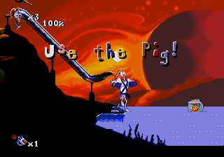
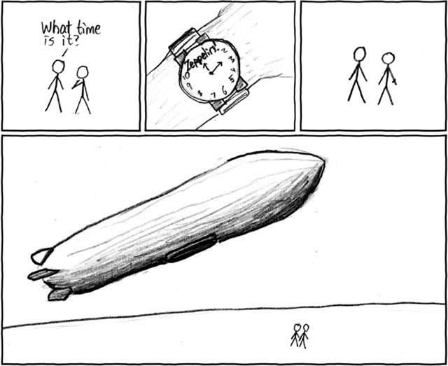

I have a Macbook, which doesn't have some keys necessary to use Ned. I was hoping to use the computer to build more complicated levels, but I can't...any ideas??
No need to reply to my post, I just figured it out...
I've submitted about ten maps to NUMA, and my friend has submitted about 20, but our maps don't get enough votes to have a public rating. I understand that once you have a reputation for making good maps, it's easier to get ratings, but what are you supposed to do when you first start out?
Thanks, Qix.
Thanks for your suggestions, apg. I'll definitely take them into account.
Beautiful. Perfectly awesomely beautiful. I love it. 15/10
I like all of them, but the first is my favorite because of the funke disco groovz (btw it's pronounced fonkee disco groovez)
That was just mean. Not cool.
The world will end when we megaindustrialize and widespread deforestation occurs and we lack oxygen and we are also going to run out of a source of energy and we also need to put more money into colonizing space because earth can't sustain us much longer and I'm done rambling.
I think that people exist to watch the brilliant ever-changing symphony that occurs in outer space, because we're here to observe the universe and give everything that exists meaning.
Pretty snappy graph, topolord. Anyway, to all the skeptics out there, once the polar ice caps melt and coastal towns flood and arctic and antarctic species go extinct, maybe you'll look from the right point of view.
In response to the very first message on this board, you really shouldn't quote from wikipedia, mac addict. Anyone can edit it, and I know people who have changed articles about Oprah to say she eats her unborn children. BTW, while evolution is right, Darwinism is not, so don't make those two things the same. Evolution has more modern evidence. And intelligent design is total BS.
Patriotism is having love for one's country and the desire to serve it. Please don't associate patriotism with nationalism or fascism or communism, PLEASE.
For those who don't know, Jump Super/Ultimate Stars is a Japanese game that brings together all of the characters from Shonen Jump into a giant, awesomely fun fighting game. It includes Naruto, DBZ, One Piece, Bleach, Death Note, and many many other anime shows I don't know the name of because I can't read Japanese (yet). You can find it on Ebay or buy it at Fry's Electronics if you want to get it (I recommend Ultimate Stars).
I own this game and personally find it to be the awesomest game ever, and it was worth the wait. Please tell me which platform you played it on and what you would rate it out of 10.
For beginner, I have three seconds. I didn't cheat, I just clicked about at random really really fast, and then did some accurate clicks to finish it up. I haven't tried Intermediate or Expert, and I now have a mac, so I can't do it.
I play pretty much any type of game, I'm just not fond of bloody shooters, just non-bloody ones (i.e. Metroid Prime). I personally like RPG's and arcade games (Golden Sun is the best rpg for GBA)
For the laws part, the golden rule is good, yes, but the platinum rule is better. Do unto others as they would have you do unto them. This would create a truly perfect society.
Our world definitely has its share of serious problems that people don't want to deal with. Global warming, overfishing, corrupt governments, inflation; these are all serious problems that people need to get to the core of and deal with. Which of these is most important, and needs to be done right away?
The one with the red, green and blue was more of an epilepsy test than an optical illusion...I liked the song though, I know what it's called, but I don't remember...
What is your favorite
1. Action level?
2. Puzzle level?
3. Survival level?
4. Tileset?
5. N art?
6. DDA?
7. Race level?
I'll start out
1 Desperado by jeffkillian
2 N the minesweeper by snailsrule
3 courage and stupidity by formica
4 alien by traction
5 my last (maybe) shining star =p (3) by neath_X
6 firecracker by clifty
7 the crazy miner by formica
1. Action level?
2. Puzzle level?
3. Survival level?
4. Tileset?
5. N art?
6. DDA?
7. Race level?
I'll start out
1 Desperado by jeffkillian
2 N the minesweeper by snailsrule
3 courage and stupidity by formica
4 alien by traction
5 my last (maybe) shining star =p (3) by neath_X
6 firecracker by clifty
7 the crazy miner by formica
Good gameplay in an action map is when it has "the feel (mentioned before)" and when it makes you want to play it again and again and again no matter how much you die. Desperado 1&2 are great examples of what defines good action gameplay.
Hey, I'm Mr__X, and I'm new to the forums. I'm fifteen now and I'm in the 11th grade, I live in Pasadena, CA. I like playing games of any kind, (board, card, gambling, video, flash, N), music (I play the guitar, piano, keyboard, and I could probably play the bass and drums with practice), and I like building stuff and taking it apart (I'm an engineer). I post mostly in the general community, you won't find me most other forums.
It's all superstition. Just because there's a movie that kinda proves some stuff doesn't mean anything. Every culture has its unlucky numbers.
I am an athiest, but I lack belief in god, not actively believe there's no god. That's what I based my answer on. You should change it to encompass systems of belief, i.e. Buddhism, because it has no god.
7/10. I kinda like it...
Mine has 152, the default number, because my computer doesn't like it when I try to edit the userlevels document. 
Funny how you used my name in your first post. Anywayyy...the big bang is our explanation so far, but this is the information age. Things are constanty being proven wrong and right, so I think we will soon know how we were created, and possibly why.
You're not a coward. Anyone who said yes would certainly back out if confronted by the situation. I wouldn't fight because it makes no sense. Wars cause nothing but grief and destruction. I would rather be a diplomat than a soldier.
That was...uhhhh......interesting......well kinda...sorta...not really...it's just weird. Liked it though...
The big bang explains it all. Before the universe existed, there was a single particle with infinite density. This particle exploded, and planets, stars, solar systems were formed. That's why the galaxies are drifting apart from each other.
This is my first, expect another soon.
[QUOTE]There was a flash, then a very loud rumbling sound. He looked up, and the world he knew was gone. He gazed, at the desolate cities, at the empty horizon, and realized "I'm the only one..." He started running. Running, away from the horrors of the past, towards an empty future. Then there was silence...
[QUOTE]There was a flash, then a very loud rumbling sound. He looked up, and the world he knew was gone. He gazed, at the desolate cities, at the empty horizon, and realized "I'm the only one..." He started running. Running, away from the horrors of the past, towards an empty future. Then there was silence...
3 is the best. 2 is from readymade, red hot chili peppers, stadium arcadium.
You wanna hear some good guitar solos? Listen to Led Zeppelin. Heartbreaker, stairway to heaven, houses of the holy, all great stuff.
I got a cool idea to get maps rated, but I don't know if it's illegal or not. I thought you can get 5 other people with accounts on NUMA, and each member of this group of six rates each of the maps of the other 5 people. Legal or not? 
Here's another one, in the same setting as my first, different person.
He emerged from the ruins of the building. His thoughts raced. "Where am I? What happened? Who am I?" He didn't know his own name! He fumbled for his employee I.D. "John Harding?" He studied the picture on the card. "I need to find a mirror!" He looked up, and saw someone standing above him.
He emerged from the ruins of the building. His thoughts raced. "Where am I? What happened? Who am I?" He didn't know his own name! He fumbled for his employee I.D. "John Harding?" He studied the picture on the card. "I need to find a mirror!" He looked up, and saw someone standing above him.
I like being in the light, it gives me a sense of better knowing what's going to happen. I just don't like the light given off by regular light bulbs, it just annoys me. I prefer natural light.
Technically the egg came first, because it was not necesarily a chicken egg, maybe a dinosaur?
I was working on a killer N art of the planet Jupiter, and then I accidentally deleted it. It happens, and I got over it, but still, there's no reason not to be frustrated
Just another thought, since it seems legal, how do you guys think I should start it? Post a topic, maybe?
I understand that my post on April 12 may have offended some people, and I apologize for any inconvenience I have caused. However, I did not mean what DemonzLunchBreak said I meant. I respect your opinion, Macaddict, and I would never call your posts, or anyone else's for that matter, BS. I am not trying to force my opinion on anyone, I just didn't think about what I wrote until after I posted it.
Here's a more thought out opinion. I call myself a "rationalist." I will believe what makes the most sense to me. Right now this is evolution, and my beliefs will not change until it is disproven.
Once again, I apologize to anyone I may have offended with my post.
Here's a more thought out opinion. I call myself a "rationalist." I will believe what makes the most sense to me. Right now this is evolution, and my beliefs will not change until it is disproven.
Once again, I apologize to anyone I may have offended with my post.
Here's a couple of mine.
http://numa.notdot.net/map/85997
http://numa.notdot.net/map/85913
Please rate and give me feedback.
This is a great thread, BTW.
http://numa.notdot.net/map/85997
http://numa.notdot.net/map/85913
Please rate and give me feedback.
This is a great thread, BTW.
I don't really get it, but I think it's a 7/10
I should really be getting to work...well, ok, just one more forum...
Road trippin'- Red Hot Chili Peppers
banned for not living in the USA
Mr. xoffee
Here are the ones I think are most important
1. Reworking Ned (I would personally like to see diagonal doors and oneways) EDIT: Not possible, dang.
2. User episodes
3. Ability to sort through user levels
In lieu of, or in addition to #1, I would like to see the extra N's affected by gravity/physics, I.E. they slide down hills, and fall, etc.
1. Reworking Ned (I would personally like to see diagonal doors and oneways) EDIT: Not possible, dang.
2. User episodes
3. Ability to sort through user levels
In lieu of, or in addition to #1, I would like to see the extra N's affected by gravity/physics, I.E. they slide down hills, and fall, etc.
I'm sorry about that. I commented on a couple maps that were a little bit more than the one above, just a simple misunderstanding. Don't worry, unconditional, I've rated and commented.
Sorry!
Sorry!
By the way, I rated three of 29403's maps.
Mr. Xark
Rated and commented Mectradevil's Ham.
http://numa.notdot.net/map/84324
Try the bottom right path, requires some guesswork and trial and error.
http://numa.notdot.net/map/84324
Try the bottom right path, requires some guesswork and trial and error.
What I like 
-symmetry (don't ask me why, I just like it)
-challenging simplicity
-challenging complexity
-fun to play (or watch, with DDA's)
-innovation
What I don't like
-excessive amounts of anything
-levels that have little time put into them
-anything that isn't fun
-horrible noobish DDA's
-chainguns
-non-playtested levels
what i'm not sure about
-prisoner levels
-gold delay in DDA's
-symmetry (don't ask me why, I just like it)
-challenging simplicity
-challenging complexity
-fun to play (or watch, with DDA's)
-innovation
What I don't like
-excessive amounts of anything
-levels that have little time put into them
-anything that isn't fun
-horrible noobish DDA's
-chainguns
-non-playtested levels
what i'm not sure about
-prisoner levels
-gold delay in DDA's
Yep, i'm somebody.
29403?
29403?
Granted, but Bill Gates has just sent out a team of assassins to make sure you never make anyone else bankrupt. Ever.
I wish I could double jump.
I wish I could double jump.
No.
Would you have lunch with me and talk for hours about major world issues?
Would you have lunch with me and talk for hours about major world issues?
Rated 29403's and seven_two's maps, commented on some.
http://numa.notdot.net/map/86635
http://numa.notdot.net/map/84273
http://numa.notdot.net/map/84274
http://numa.notdot.net/map/84326
http://numa.notdot.net/map/84175
please leave comments if you can.
http://numa.notdot.net/map/86635
http://numa.notdot.net/map/84273
http://numa.notdot.net/map/84274
http://numa.notdot.net/map/84326
http://numa.notdot.net/map/84175
please leave comments if you can.
A really funny one from our bald, fat, yellow family man (that's Homer Simpson if you're slow).
I love your magazine, especially the "Enrich Your Wordpower" section! It's really...really...really...good.
I love your magazine, especially the "Enrich Your Wordpower" section! It's really...really...really...good.
NOOOOOOOOOOOOOOOOOOOO!!!!!
I've never heard that word that many times in my life. Oh, wait, I have. Pretty funny, I liked Darth Vader's the best.
I've never heard that word that many times in my life. Oh, wait, I have. Pretty funny, I liked Darth Vader's the best.
I actually meant that they have to play, comment, and rate, and for the comments, not just "4/5. Fun." However, I'm still thinking about the possible pros and cons of this, so I won't be doing anything to start it for a while. Please continue to provide your thoughts on the subject.
Rated some of kkstrong0's and bunniesandsheep's
http://numa.notdot.net/map/86635
http://numa.notdot.net/map/84175
Please comment
http://numa.notdot.net/map/86635
http://numa.notdot.net/map/84175
Please comment
Banned for advertising his beginnerness.
So what if I do? 
the next person to reply has a black hole in their pants.
the next person to reply has a black hole in their pants.
$/-\3Rr0l^l
Casts bolt lv. 3 on nearby objects, animate and inanimate.
Once upon a time, toilets, frogs and skies on lines
of radiant shards of light
(5 words at a time is better. If everyone did their posts in this format, it would be easier to read )
of radiant shards of light
(5 words at a time is better. If everyone did their posts in this format, it would be easier to read )
From the Decline of Videogaming series - watch it, there's a link in my sig!
Head of Square Enix - I swear, one more word out of you, and you're gonna get a face full of Bolt 2!
JT - I'll give you a silent night...
Dim - Actually, this is Ribena.
Dan - If spiderman can do whatever a spider can, does that mean he has trouble getting out of the bath?
Tom - OHMYGODI'MONFIRE!
Go Super Flash Bros!
Head of Square Enix - I swear, one more word out of you, and you're gonna get a face full of Bolt 2!
JT - I'll give you a silent night...
Dim - Actually, this is Ribena.
Dan - If spiderman can do whatever a spider can, does that mean he has trouble getting out of the bath?
Tom - OHMYGODI'MONFIRE!
Go Super Flash Bros!
Depends what kind of sparring. I personally prefer kendo.
Would you have a highscore competition on 88-4 with me?
Would you have a highscore competition on 88-4 with me?
Wow. kkstrong0 is dominating this forum. Rated maps from the two posts above me.
People might have already rated these, but here they are anyway.
http://numa.notdot.net/map/84174
http://numa.notdot.net/map/84175
http://numa.notdot.net/map/86635
Please comment, I need feedback, it helps me to improve my levels.
People might have already rated these, but here they are anyway.
http://numa.notdot.net/map/84174
http://numa.notdot.net/map/84175
http://numa.notdot.net/map/86635
Please comment, I need feedback, it helps me to improve my levels.
I'd have to go with 8. I don't know why, but it's always been my lucky number.
Guys, PLEASE stop calling me a multiaccounter, I'm getting really annoyed. I am friends with sniperwhere, and we are helping each other to get our starts on the forums and NUMA.
Anyway, I rated all from the five posts above me.
http://numa.notdot.net/map/86635
http://numa.notdot.net/map/84175
http://numa.notdot.net/map/84273
http://numa.notdot.net/map/84274
http://numa.notdot.net/map/84324
Once again, please comment, I NEED feedback.
Anyway, I rated all from the five posts above me.
http://numa.notdot.net/map/86635
http://numa.notdot.net/map/84175
http://numa.notdot.net/map/84273
http://numa.notdot.net/map/84274
http://numa.notdot.net/map/84324
Once again, please comment, I NEED feedback.
beginner from romania
Once upon a time, toilets, frogs and skies on lines of radiant shards of light pony pony pony pony GLAYYYSUR!! pony ponied ponies with poniness, while Ponyette ponied Ponydude's pony's You guys wrecked the game. Mr. Pony said "Hey Cracka!" Pony this, pony that, ponied great leaping pony-shaped glacier minions!! The ponies melted all glaciers. Pony-frogs of ponying poniness GLAYYYSHURS!
Some of you guys are missing the point, read the first post.
Echoes - Pink Floyd
Echoes - Pink Floyd
Banned for posting a lot in this thread.
Once a rabbit stole pony wind! It decided to pony ponies from pants without ponying toast into ponies. flamingos and PONY/sheep-hybrids danced mercilessly emoish. Pique Pony licked the moderator's banhammer and Q ate GLAYYYSHURZ made pony tantalize the quasiber paper. 'CHICKEN ROTFLOLBBQZORZ' said, "Ponies suck!" sarcastically to ponies amongst glaciers The EVIL froggy Floated Toward Ponies,fishes,and incredibly-long-hyphenated-purple-dishwashing-monkeys-with-laser-beams [and a] super-giraffe decided badgerfull-superdeliciousweenies are
Epigone? You know what that means, right?
Epigone - A second-rate imitator or follower, especially of an artist or a philosopher
You're second rate, so HA!
Epigone - A second-rate imitator or follower, especially of an artist or a philosopher
You're second rate, so HA!
Rated all from the posts after my last one.
All of these need one more vote!
http://numa.notdot.net/map/86635
http://numa.notdot.net/map/84324
http://numa.notdot.net/map/84175
http://numa.notdot.net/map/84274
http://numa.notdot.net/map/84174
Please comment!
All of these need one more vote!
http://numa.notdot.net/map/86635
http://numa.notdot.net/map/84324
http://numa.notdot.net/map/84175
http://numa.notdot.net/map/84274
http://numa.notdot.net/map/84174
Please comment!
I LOOOOVE civil. I've always wanted to play EXTREME hangman. I had gotten about 10 levels in a row done. Then I got the assault rifle. I also got a slightly misleading clue.
This was me.


This was me.
Wow. that looks like it took a LOT of time. Awesome.
I have N v. 1.4 for mac, and I have been trying to add levels into my userlevels.txt for a while. Every time I try to save it, it tells me that the file is "read only." Then, if I try to overwrite it, it can't save it onto the computer. Any ideas?
I like food and GLAYYSHURZZ!!
Nope.
Beginner2?
Beginner2?
He sat, cross legged, his back towards me, in the empty room. Empty. That was his philosophy. No action, no emotion. Just exist, as one with everything. That is what I had come to learn. Still in his silent, striking, divine repose, he said, "I have been expecting you. We will begin your training now."
I tried, and failed. I can't edit the folder n_v1mac and I can't save it as a .txt file.
Nope. I do not have "sufficient priveliges" for that folder. I can't edit anything. I wonder if this happens with every mac...
There's a flash series called the Decline of Videogaming, which is the best flash series in the history of everything. Pretty much any game you can ever make fun of, these guys did. Go to this link to watch it, there's a link to the first three if you start the movie.
http://www.newgrounds.com/portal/view/253824
Watch it twice, once with creator's notes and once without. Plus, it helps if you know about the games they talk about.
Enjoy! Go super flash bros!
http://www.newgrounds.com/portal/view/253824
Watch it twice, once with creator's notes and once without. Plus, it helps if you know about the games they talk about.
Enjoy! Go super flash bros!
Orange Crush - REM
}{3\/
in 1337, "P" is l?
in 1337, "P" is l?
Telepsychokinetics - the act of using telepathy to generate thoughts in another's brain.
YAY! I got it to work, thanks twistkill.
Spiders. Gah, they just creep me out.
Granted, but you're overthrown.
I wish I could be better at N
I wish I could be better at N
Rated all from the three posts above me.
http://numa.notdot.net/map/84328
http://numa.notdot.net/map/84326
http://numa.notdot.net/map/84273
http://numa.notdot.net/map/85913
RCE!
http://numa.notdot.net/map/84328
http://numa.notdot.net/map/84326
http://numa.notdot.net/map/84273
http://numa.notdot.net/map/85913
RCE!
Awesome. Just started today, my nation is called Kenzland.
That is SO FREAKIN FUNNY! I'm gonna watch all of these, even though I really should be working.
I agree with kkstrong0, this is a nice mappack. I would add it to my userlevels if it was formatted right.
Evil Ways - Santana
Hey you, standing in the road, getting lonely getting old, can you help me?
Yep, I painted it myself.
The next person will have a guitar in their pants.
The next person will have a guitar in their pants.
I'm gonna have to go with classic rock. Led Zeppelin, Pink Floyd, The Beatles, The Police, and countless others. For some reason, I like songs with a good melody.
The ones I tried were actually okay, if they were on NUMA, I'd give them a 3.
Just some advice.
- Don't cluster gold. Some gold=more time=good. Too much gold=lag=bad.
- I'm not sure if you did or not, but make the tileset before you put objects in, and spend as much time on the tileset as you do on the objects.
- Make sure everything has a use. You should be able to get every gold piece, and every enemy should be able to kill you.
There are some threads where experts talk about how to make good levels, but I don't know the links to them. Hopefully someone below me can post them.
Pretty good, but there's always room for improvement!
Just some advice.
- Don't cluster gold. Some gold=more time=good. Too much gold=lag=bad.
- I'm not sure if you did or not, but make the tileset before you put objects in, and spend as much time on the tileset as you do on the objects.
- Make sure everything has a use. You should be able to get every gold piece, and every enemy should be able to kill you.
There are some threads where experts talk about how to make good levels, but I don't know the links to them. Hopefully someone below me can post them.
Pretty good, but there's always room for improvement!
IGNORE THIS POST, LOOK AT THE ONE BELOW
It's actually pretty easy to do, they're called ghost doors. If you put a trap door and a locked door down on the same place, then activate the trap door and then the locked door, you can go through the trap door. Look at the code in debug mode.
It's actually pretty easy to do, they're called ghost doors. If you put a trap door and a locked door down on the same place, then activate the trap door and then the locked door, you can go through the trap door. Look at the code in debug mode.
I have a Macbook, and N doesn't slow it down that much, only if I have 5 or 6 programs running, but it DRAINS the battery life. It lasts maybe 2 and a half hours on a full charge.
Oh, yeah, huh. (Edits post.)
Here's one that DOES work, but it uses a 2x2 area and oneways, if that's fine. And it only works once.
Here's the code, yes I've tried to attach the file, but it doesn't like it.
11111111111111111111111111111111111111111111111111111111111111111111111111111111111111111111111111111111111111111111111111111111111111111111111111111111111111111111111111111111111111111111111111111111111111111111111111111111111111111111111111111111111111111111111011111111111111111111110111111111111111111111101111111111111111111111011111111111111111111100111111111111111111111001111111111111111111111011111111111111111111110111111111111111111111101111111111111111111111111111111111111111111111111111111111111111111111111111111111111111111111111111111111111111111111111111111111111111111111111111111111111111111111111111111111111111111111111111111111111111111111111111111111111111111111111111111111111111111111111|5^300,276!7^396,276,0!7^420,276,3!7^420,252,1!9^492,276,1,0,17,11,1,0,-1
Here's one that DOES work, but it uses a 2x2 area and oneways, if that's fine. And it only works once.
Here's the code, yes I've tried to attach the file, but it doesn't like it.
11111111111111111111111111111111111111111111111111111111111111111111111111111111111111111111111111111111111111111111111111111111111111111111111111111111111111111111111111111111111111111111111111111111111111111111111111111111111111111111111111111111111111111111111011111111111111111111110111111111111111111111101111111111111111111111011111111111111111111100111111111111111111111001111111111111111111111011111111111111111111110111111111111111111111101111111111111111111111111111111111111111111111111111111111111111111111111111111111111111111111111111111111111111111111111111111111111111111111111111111111111111111111111111111111111111111111111111111111111111111111111111111111111111111111111111111111111111111111111|5^300,276!7^396,276,0!7^420,276,3!7^420,252,1!9^492,276,1,0,17,11,1,0,-1
You can jump through the top oneway from the right side.
I checked out the latest posts, and WOW! I especially like the one eyed giant one.
Demonized, the song is Sum 41, Pain for Pleasure.
Demonized, the song is Sum 41, Pain for Pleasure.
I wonder if suki expected this to happen when he did the ban thingie.
GLAYYYSHURRR FTW!
User was banned for this post.
GLAYYYSHURRR FTW!
User was banned for this post.
*posts GLAYYYSHURRR! in Glacier Day forum*
User was banned for this post.
User was banned for this post.
Rated kkstrong0's.
This is a map I have been promoting for a while, so some of you may have rated it already.
http://numa.notdot.net/map/85913 (Dang, got sniped)
Anyway, please leave comments.
This is a map I have been promoting for a while, so some of you may have rated it already.
http://numa.notdot.net/map/85913 (Dang, got sniped)
Anyway, please leave comments.
This is really fun..
Bob:Hey dude
Joe:'Sup
Bob: Why weren't you on the forums yesterday?
Joe:I got banned
Bob:For what?
Joe: For posting GLAYYYSHURRR!!!
Bob: I thought it was a permanent IP ban
Joe: Nah, suki wouldn't ban everyone who did that
Bob: Cool. Now we can just watch McP invade Uzbekistan
Bob:Hey dude
Joe:'Sup
Bob: Why weren't you on the forums yesterday?
Joe:I got banned
Bob:For what?
Joe: For posting GLAYYYSHURRR!!!
Bob: I thought it was a permanent IP ban
Joe: Nah, suki wouldn't ban everyone who did that
Bob: Cool. Now we can just watch McP invade Uzbekistan
Sets sniper's sandwich on fire and eats a taco.
This is AWESOME!!
EDIT: Email deleted to prevent spam from getting to me.
DOUBLE EDIT: I hate you, ravenclaw.
EDIT: Email deleted to prevent spam from getting to me.
DOUBLE EDIT: I hate you, ravenclaw.
I like anything science fiction. Dune, Ender's Game, 2001, Rama, and many others...
My absolute favorite book is Ender's Game. I practically know it by heart.
My absolute favorite book is Ender's Game. I practically know it by heart.
You know you've been playing Advance Wars too much when you have grid-based, turn-based dreams.
29-3
I've been having a lot of trouble getting out of the left side.
I've been having a lot of trouble getting out of the left side.
Jacques
Alright, here we go...
Coke or Pepsi?
Pirates or Ninjas? (Wow, why am I even asking this here)
Mario or Sonic?
Microsoft or Apple?
or ?
Coke or Pepsi?
Pirates or Ninjas? (Wow, why am I even asking this here)
Mario or Sonic?
Microsoft or Apple?
or ?I really like the very first one, if you could make me one with that style, or just slap my name on that sig if it's not taken, I would really appreciate it. And you don't have to rush, I can wait. Thanks, rocket.
I pretty much like anything minty, but I say Juicyfruit's the best.
I played WAAAAAAAY better as the pink ninja, but I say they should have a GLAYYYSHURRR ninja. (By the way, that's not a reused joke, it's a running joke, which we can, and should repeat...)
Yeah, this is pretty fun.
ALL FEAR BOB OF DESTINY!!

ALL FEAR BOB OF DESTINY!!

Rated skyline's and bunnies'.
http://numa.notdot.net/map/88114 (My latest map)
http://numa.notdot.net/map/85913 (My best map)
Please comment.
http://numa.notdot.net/map/88114 (My latest map)
http://numa.notdot.net/map/85913 (My best map)
Please comment.
$l*0ol\l
I dunno, she's OK, I guess. I just think the commercials are REALLY WEIRD. They're fighting robots in a car insurance commercial, and all I get out of it is the "quote buy print" stuff.
Banned for using bad spelling.
HELL YEA!!!!! (Sound of Kai getting obliterated...) PWN3D!!! ")
Would you have a highscore competition on a random level with me?
Would you have a highscore competition on a random level with me?
Gets slightly annoyed at sniper/spoon's talk about Chuck Norris.
Gets roundhouse kicked in the face by an unknown assailant.
Explodes. 


Gets roundhouse kicked in the face by an unknown assailant.
Explodes.
It looks cool. 8.5/10.
You know you're a noob to N when...
- You post a topic in the N help section because you forgot to turn capslock on in Ned. Then you leave it on when you do everything else.
- You stack launchpads and gold, and then wonder why you have so much lag.
- You don't know how to walljump.
- You post in all caps or 1337.
Edit: YAY! Last post on page 1!
You know you're a noob when...
- You celebrate useless events.
- You post a topic in the N help section because you forgot to turn capslock on in Ned. Then you leave it on when you do everything else.
- You stack launchpads and gold, and then wonder why you have so much lag.
- You don't know how to walljump.
- You post in all caps or 1337.
Edit: YAY! Last post on page 1!
You know you're a noob when...
- You celebrate useless events.
I agree with you, Kablizzy. And George. Suki was just having fun, I knew that he wouldn't ban all those people for posting the G word.
I would like to say that I did post it on purpose, but not for the reasons mentioned above. I found the rule to be frivolous and not really important, so I didn't care. I respect our administrative staff, and I apologize for any inconvenience. I just love the word. I am not asking that you remove my warn, though it would be nice, but I'm just saying what I think about this.
I would like to say that I did post it on purpose, but not for the reasons mentioned above. I found the rule to be frivolous and not really important, so I didn't care. I respect our administrative staff, and I apologize for any inconvenience. I just love the word. I am not asking that you remove my warn, though it would be nice, but I'm just saying what I think about this.
Thanks a million for the sig, rocket. Great work!
WAAAAHAHAHAHAHAHAHAHAAAAAAAAAA!!!
Heh. Heh. Heh heh.
Wow, these were funny.
Heh. Heh. Heh heh.
Wow, these were funny.
Pretty short, but interesting. I agree, suki, armorgames are awesome.
Xango
Plays Tetris, scores 99,999,999 points, collapses.
Granted, but it ruins your house/room/wherever you live.
I wish I could do something cool.
I wish I could do something cool.
...burn stuff like I used to?
If you can't take the heat...
If you can't take the heat...
Revivez0rzed once again...
Bob: Hello, good sir.
Joe: What's with that language?
Bob: Ah, let us watch, as the morning sun breaks through the clouds, basking us in its otherwordly glow.
Joe: Dude, what's wrong with you?
Bob: Ah, the mind of the simpleton. So vexing, but I will tolerate this for now.
Joe: Listen, you're really annoying me...
Bob: Ah, I understand. I will quit this subject immediately.
Joe: DUDE, JUST TALK NORMAL!!!!
Bob: I see that I my presence is not desired. I shall take my leave of you.
Joe: ARRRRGGGGGHHHH!!!! (Turns very red) (Stomps off)
Bob: ........WAAAAAHAAHAAHAAHAHAHAHA!!!!
Bob: Hello, good sir.
Joe: What's with that language?
Bob: Ah, let us watch, as the morning sun breaks through the clouds, basking us in its otherwordly glow.
Joe: Dude, what's wrong with you?
Bob: Ah, the mind of the simpleton. So vexing, but I will tolerate this for now.
Joe: Listen, you're really annoying me...
Bob: Ah, I understand. I will quit this subject immediately.
Joe: DUDE, JUST TALK NORMAL!!!!
Bob: I see that I my presence is not desired. I shall take my leave of you.
Joe: ARRRRGGGGGHHHH!!!! (Turns very red)
(Stomps off) Bob: ........WAAAAAHAAHAAHAAHAHAHAHA!!!!
EWWWWWWW!!
The next person will have a portable butane stove in their pants.
The next person will have a portable butane stove in their pants.
...kick various objects?
I wonder why...
I wonder why...
l<l<51l20l\l(#0
No Quarter - Led Zeppelin
Sniper X
Now, there's a cool name!
Now, there's a cool name!
Okay, so Nindae forgot something, so...
gets NOTHING!!
Inserts an apple
gets NOTHING!!
Inserts an apple
Love it.
Puns.
Puns.
Level 91: Defeat Mario, Link, a random ninja, and Chuck Norris.
You know you're spending your money on the wrong things if half the stuff you own has the letter "i" in front of its name.
Just some advice for you, delete your email from your post once you've gotten your invite, I just got a email from someone I definitely don't know, and I'm probably on many spam lists now.
Wow, that was funny. I couldn't stop watching it.
I took an old AP test from 1998 or something. There are some random questions, but I remember there being a lot on globalization and interactions between societies (i.e. imperialism, trade, etc.) so I would focus your efforts on those areas. But, seriously, you never know, so get a broad range of knowledge, and work on your test taking skills. Also, you should get one of those review books, because they seriously help. A lot.
Hunh. Okay then.
Okay then.I agree with apg, it's OK for cheat sites, but not for metanet sites. It's not that hard to find online, but going to those sites is completely up to the user. If you want to figure it out yourself, then you shouldn't have to see it before you unlock it.
8. It's been my lucky number forever, and I find it everywhere. I even count my steps in eights.
*Steals Brocerius' enlightenment, runs away*
*Comes back an hour later, guilt ridden, returns it*
*Comes back an hour later, guilt ridden, returns it*
Granted, but it doesn't win.
I wish I could cook really good asian food.
I wish I could cook really good asian food.
I like the difficulty. It grows with your skill.
This is my History project video. I'm Private Poptart.
http://youtube.com/watch?v=VkIQWW6wpLs
Wow. That is amazing. Wow.
Gets halberd.
Inserts piano.
Inserts piano.
This is a bit of political humor that I found in another thread. The Apple iRack!
http://www.youtube.com/watch?v=rw2nkoGLhrE
THERE IS NO EXIT STRATEGY!
http://www.youtube.com/watch?v=rw2nkoGLhrE
THERE IS NO EXIT STRATEGY!
The videos posted here are really funny. Let's not have this thread closed, so keep it clean.
@nevermore - In the Apple iRack sketch, they are making fun of our situation in Iraq, and how Bush plans to send more soldiers there, even though it will not help. Yeah, I'm kinda keeping up with politics, so I know some stuff.
@nevermore - In the Apple iRack sketch, they are making fun of our situation in Iraq, and how Bush plans to send more soldiers there, even though it will not help. Yeah, I'm kinda keeping up with politics, so I know some stuff.
Here's a leetspeak translator, and you can even change the l33tness!
I think that it'd be best to preserve the simplicity of this game, and the drones are fine as they are.
EDIT: Shouldn't this be in the suggestions forum?
EDIT: Shouldn't this be in the suggestions forum?
New Year's Day - U2
And on the 36th day, God created KoL. And the world rejoiced.
 'em! s
'em! sWell, here's me, taken a minute ago with photo booth.
Thanks for the advice, demonz.
Thanks for the advice, demonz.
Yeah, how do you upload a photo? 
As you might or might not have noticed, I am not the best with this stuff...
As you might or might not have noticed, I am not the best with this stuff...
This one is simply fabulous!

You died because the sun was in your hands, and it was too bright and burning-ish.
Keron Cyst? Nope.
I'll say octopod squad
I'll say octopod squad
Hunh. I have a feeling that won't feel right...
Anyway, the next poster has a in their pants.
in their pants.
Anyway, the next poster has a
in their pants.I bought Wii play, cause it came with the remote, and now I patiently wait for a store to have a wii.
Love it...I guess...(Who's patriccio?)
david hasselhoff
david hasselhoff
*Attempts to beat MTI, gets slightly annoyed, tries a couple more times, gets really annoyed, calms down, accidentaly exits N, begins to cry*
tries a couple more times, gets really annoyed, calms down, accidentaly exits N, begins to cry* And on the 45th day, God created some more important stuff, like governments, and buildings, and thoughts and stuff.
Twentieth Century Fox - The Doors. (I hope someone has a song that starts with X...)
For bears to want to attack you, you would want to......wear cologne that smells like fish.
10 years from now, I will be a(n)
Granted, but you get too much and now you can't walk without pulling a muscle.
I wish people could realize that samurai and ninjas are enemies, so samurai ninjas can't exist.
I wish people could realize that samurai and ninjas are enemies, so samurai ninjas can't exist.
Does anyone know what the L-shaped pieces of metal do? They go for A LOT on the flea market, and I have the crusty and rusty one.
337 1$ 0n 0r p47h371( 1n73rn37 903r$ 7h47 h4v3 n07h1n9 b3773r 70 0 7h4n 34rn 17, 0r 1n 4 7r4n$470r 4n 7r4n$473 17. H4h. 1 b37 0 7r4n$473 7h1$, 700. $(|{3r.Leet is only for pathetic internet goers that have nothing better to do than learn it, or find a translator and translate it. Heh. I bet you translated this, too. Sucker.
Well, it depends on how you look at it, I find it pretty fun...
Alright the exam is tomorrow, so I have one last piece of advice...GO TO SLEEP.
Don't stay up into the night, you won't learn the stuff. If you want, get up a little earlier, and review the material in the morning.
Good luck everyone!
Don't stay up into the night, you won't learn the stuff. If you want, get up a little earlier, and review the material in the morning.
Good luck everyone!
AWESOME!! We just broke the records for the number of entries AND entrants.
I love this contest, and I love that people are becoming interested in it.
I love this contest, and I love that people are becoming interested in it.
Thanks, metanet, for having one of the best games I've seen, and one of the best communities that ever revolved around anything. Thanks!
Okay, these two are often regarded as the hardest levels in the game. I was just wondering which people thought was harder/more frustrating and why.
This one's great. I still miss trogdor though.
93/100
And the dragon comes in the NIIIIIIGGGGGHHHHHTTTT!!
93/100
And the dragon comes in the NIIIIIIGGGGGHHHHHTTTT!!
318 songs
23.9 hours
1.35 GB
22 artists
32 albums
23.9 hours
1.35 GB
22 artists
32 albums
Y'know, that's something that I really want to do, and I think everyone should. It's a great experience.
I remember hearing that somewhere, but I don't remember where or when. If I do. I'll tell you.
http://vixy.net/
Useful for ripping videos off YouTube.
You know that's illegal, right?
Okay, I'm stuck on Bricklayer, 83-3. Does anyone know a specific route to take through the level that saves time?
Just What I Needed - The Cars
Just beat episode 83. Thanks, hendor.
EDIT: Hey hey, I'm a metanut now!
EDIT: Hey hey, I'm a metanut now!
And on the 72nd day, God created TROGDORRR!
They stood, swords crossed. He also held a blade catching jitte in his left hand. "The most impotant thing I will teach you," he said, "is that the first blow is the most important. It often negates the need for a second." Then, he struck, leaving me stunned. "Get up. Your training is not over."
NEVER!
Would you make an N webcomic with me?
Would you make an N webcomic with me?
Banned for having a black and white sig.
B) Hourglass.
Here's one that you might know, depending on what you've read recently.
This thing all things devours:
Birds, beasts, trees, flowers;
Gnaws iron, bites steel;
Grinds hard stones to meal;
Slays king, ruins town,
And beats high mountain down.
Here's one that you might know, depending on what you've read recently.
This thing all things devours:
Birds, beasts, trees, flowers;
Gnaws iron, bites steel;
Grinds hard stones to meal;
Slays king, ruins town,
And beats high mountain down.
Nope.
Shark?
Shark?
Anywayyyyyy...
Ben? Or were you just kidding?
Ben? Or were you just kidding?
Heh. I love these. Great punchlines. I've been calling people "Wells" because of this (and because they're down with the wate table).  Can't wait for the next one!
Can't wait for the next one!
Can't wait for the next one!And on the 75th day, Kablizzy created God
Are you sure it's not a spork?......or a sporkfe?
The next poster will have biscotti in their pants.
The next poster will have biscotti in their pants.
Gets Steve Jobs.
Inserts a coke.
Inserts a coke.
Okay, so stepself forgot, so he gets no horoscope.
I'm a Leo.
I'm a Leo.
Here's another.
Bob: 'Sup?
Joe: Hunh?
Bob: Y'know, 'sup?
Joe: Dude, what does that mean?
Bob: Y'know, like whassup, just in one syllable.
Joe: Oh.
Bob: What?
Joe: It's true, our language is deevolving.
Bob: That's not true, okay?
Jimmy: 'SUP DUDES, LOL, I JUST SAW MY BUDDY, AND HE WAS LIKE 'SUP DUDE, AND I WAS LIKE YO, THAT'S INSANE! ROFL.
Bob: Okay, you win.
Jimmy: YEA, SO THEN I WAS LIKE HOLD ON, BRB, I GOTTA GO TALK TO THESE GUYS, AND HERE I AM NOW!
Joe: AAARRRRRGGGGHHHH!!!
Jimmy: WTF DUDE, LOL.
Bob: 'Sup?
Joe: Hunh?
Bob: Y'know, 'sup?
Joe: Dude, what does that mean?
Bob: Y'know, like whassup, just in one syllable.
Joe: Oh.
Bob: What?
Joe: It's true, our language is deevolving.
Bob: That's not true, okay?
Jimmy: 'SUP DUDES, LOL, I JUST SAW MY BUDDY, AND HE WAS LIKE 'SUP DUDE, AND I WAS LIKE YO, THAT'S INSANE! ROFL.
Bob: Okay, you win.
Jimmy: YEA, SO THEN I WAS LIKE HOLD ON, BRB, I GOTTA GO TALK TO THESE GUYS, AND HERE I AM NOW!
Joe: AAARRRRRGGGGHHHH!!!
Jimmy: WTF DUDE, LOL.
I press it, creating a paradox, causing the universe to explode.
If you don't press the button, I laugh. If you do, I ROFL!!
If you don't press the button, I laugh. If you do, I ROFL!!
Died after reading too much 1337. Relax, we understand j00.
Turns from into .
into .Heh. Heh. Hehheh. Heh. GWAHAHAHAHAHA!!!
92/100
92/100
Relax, we understand j00. (I hope someone understands that reference.)
I love how creative you can be with Ned, and I kinda like the episodes. I also love the community that has grown from this game. N is easily in the top ten best things that's ever happened to me.
EDIT: Okay, so what I'm saying in a nutshell is that N offers more challenges, old and new, than any other game that I've ever played. Ned has given me the opportunity to craft levels and challenges to fit any category, any need, any preference.
What I love about the community is that except from the occasional a**wipe, everyone is a very nice, courteous person, which is something you don't find everyday.
EDIT: Okay, so what I'm saying in a nutshell is that N offers more challenges, old and new, than any other game that I've ever played. Ned has given me the opportunity to craft levels and challenges to fit any category, any need, any preference.
What I love about the community is that except from the occasional a**wipe, everyone is a very nice, courteous person, which is something you don't find everyday.
I'm guessing vampires.
Here's one I thought up real quick.
I am lighter than air, darker than light,
something that won't be found at night.
Borne from a star, one more near than far;
young minds are enthralled by me.
What am I?
Here's one I thought up real quick.
I am lighter than air, darker than light,
something that won't be found at night.
Borne from a star, one more near than far;
young minds are enthralled by me.
What am I?
I was wondering what kind of genres people here liked/disliked. Here's mine in order of preference. I think I went over most of the genres.
RPG, Platformer, Adventure, Strategy, Arcade, Puzzle, Racing, Fighting, Shooter, Sports.
RPG, Platformer, Adventure, Strategy, Arcade, Puzzle, Racing, Fighting, Shooter, Sports.
I've actually noticed another guy who's stealing metanet tilesets, and making useless spam-ish stuff.
http://numa.notdot.net/browse?author=weeew
http://numa.notdot.net/browse?author=weeew
I'm working on Level 99-4. Any help?
EDIT: Just beat it.
EDIT: Just beat it.
I couldn't agree more.Quote: apg, May 26, 2007 06:12 amI just know that every time I look at this thread, it manages to cheer me up.
Like this time.
Techno? Ohhhhh, now I get it. Heh heh. Great!
EDIT: I personally like how the orange guy says "Okay" at the end of these.
Hmmmm, I wonder. George?
Bob: Whatcha doin'
Joe: Just workin' on my computer.
Bob: Can I see it for a sec?
Joe: Sure.
Bob: Heh. Heh heh.
Joe: Dude, what was that for?
Bob: Oh, just a cough. *cough* See?
Joe: Okay then.
Bob: Heh. Fool.")
Joe: Dude, you're scaring me.
Bob: Don't worry, it's nothing.
Joe: You sure?
Bob: Yeah.
Joe: Okay then.
Bob: 
Joe: Dude, seriously, what's wrong?
Bob: I AM TEH UBER 1337 HAXXOR!!! YOUR HARD DRIVE HAS BEEN PWN3D!! 
Joe: Not again...
Joe: GET BACK HERE!!
Joe: Just workin' on my computer.
Bob: Can I see it for a sec?
Joe: Sure.
Bob: Heh. Heh heh.
Joe: Dude, what was that for?
Bob: Oh, just a cough. *cough* See?
Joe: Okay then.
Bob: Heh. Fool.
Joe: Dude, you're scaring me.
Bob: Don't worry, it's nothing.
Joe: You sure?
Bob: Yeah.
Joe: Okay then.
Bob:
Joe: Dude, seriously, what's wrong?
Bob: I AM TEH UBER 1337 HAXXOR!!! YOUR HARD DRIVE HAS BEEN PWN3D!!
Joe: Not again...
Joe: GET BACK HERE!!
Irked platypus' takes up about 80% of the page. I'm tired of having this page lag so much. Just don't go there until someone contacts arachnid and he cleans it up.
Rated from the five posts above me.
http://numa.notdot.net/map/84328
http://numa.notdot.net/map/84326
http://numa.notdot.net/map/90653
http://numa.notdot.net/map/84328
http://numa.notdot.net/map/84326
http://numa.notdot.net/map/90653
Heh. Heh heh. Heh. GWAHAHAHAHAHAHAHAHAAAAA!!!!!
*Ahem* 94/100
*Ahem* 94/100
...not even try to come up with something funny.Saw a map and yelled AAAHHHHHH!!! THE NOOBISHNESS!!!
I'm so sorry, I just couldn't help myself when I...
Trust me. If I knew...
Clyde.
Becomes uber 1337 haxxor.
Gets an enlightened soul.
Inserts
Inserts
It helps us fight,
When without light,
But blinds us in the day,
A beautiful sight,
And destructive blight,
And will always stay that way.
Fire.
Alive without breath,
As cold as death;
Never thirsty, ever drinking,
All in mail never clinking
And on the 209th day, God created
Alive without breath,A fish?
As cold as death;
Never thirsty, ever drinking,
All in mail never clinking
Yep.
I'm okay with taking pain. I'm not as sure on physical pain, because I don't fight, but I can basically cope with emotionial pain.
I just think up a question/statement, then split it into two for the topic/description.
That would be an excellent idea.
Let's see.......Once I did a PERFECT run of the crazy miner, and then died at the mine next to the exit.
Jay Leno and Conan O'Brien. They're funnier.
Dragonite, Sceptile, Lugia. Definitel my favorites. The ones in the new one are kinda weird, but they're okay.
I found it funny in Pokemon Diamond/Pearl that they used phrases like noob and for the win.
EDIT: I found an uber-grammar error, so I changed it...
I found it funny in Pokemon Diamond/Pearl that they used phrases like noob and for the win.
EDIT: I found an uber-grammar error, so I changed it...
I love this.
Nope.
sniperwhere
sniperwhere
Fire burns safety guide.
It's kinda hard with the space between the F4 and F5 keys...
Anyway, it's a great game.
I don't know about using a GH controller for it, and what type of file does the game upload for the song editor?
Anyway, it's a great game.
I don't know about using a GH controller for it, and what type of file does the game upload for the song editor?
I'd say object placement and tileset. These are what makes a level fun.
I already looked at this one, 9/10. I just changed mine.
All it shows is a black screen for me...
Are you using a Mac? If so, you need to download some other stuff and compile it, I think. There's more info on the website. It happened to me, so I don't play it on my home computer.
5. His wife has a handicap.
Okay, so just post a quote. It can be funny, inspirational, anything, just keep it clean. Quotes from people on this forum get an extra ! I'll start us off.
In theory there is no difference between theory and practice. In practice there is. - Yogi Berra
! I'll start us off.In theory there is no difference between theory and practice. In practice there is. - Yogi Berra
All it shows is a black screen for me...Are you using a Mac? If so, you need to download some other stuff and compile it, I think. There's more info on the website. It happened to me, so I don't play it on my home computer.
You need to download a bunch of python apps and other stuff if you're using a mac.
Level 97: Turn from into
into Are kids so out of the loop these days that they don't recognize a Bomberman clone?Erm.. I know its a bomber man clone, but it's still a really awesome game.
@ usaswim: Bomber Man is what this game was based off of. Except they added more to Playing With Fire. Bomber Man is for the DS I think.
Bomberman came out in 1987 on the NES (1985 in Japan). Sorry, sniperwhere, just off by about 20 years...
This game is really fun, and it's better than pretty much all of the other clones. I still like bomberman better.
Gets explosion.
Inserts Norway.
Inserts Norway.
I'm a classic smiley! Yay!
Rated sniperwhere's and frets'
http://numa.notdot.net/map/90653
http://numa.notdot.net/map/88114
http://numa.notdot.net/map/85997
http://numa.notdot.net/map/85913
http://numa.notdot.net/map/86635
NEED ONE MORE RATING!!
http://numa.notdot.net/map/84328
http://numa.notdot.net/map/84326
http://numa.notdot.net/map/90653
http://numa.notdot.net/map/88114
http://numa.notdot.net/map/85997
http://numa.notdot.net/map/85913
http://numa.notdot.net/map/86635
NEED ONE MORE RATING!!
http://numa.notdot.net/map/84328
http://numa.notdot.net/map/84326
Because sausage tastes good.
Do you not exist?
Do you not exist?
They do, it's just Trader Joe's brand.
HA! YOU HAVE FALLEN FOR THE PARADOX I HAVE CREATED!!
Anywayyyyy.
Have you beaten N?
HA! YOU HAVE FALLEN FOR THE PARADOX I HAVE CREATED!!
Anywayyyyy.
Have you beaten N?
You know you're a noob to N when you post a completion demo of a DDA on NUMA.
9/10
GWAHAHAHAHAHAHAHAHA ha ha ha ha...
That's great!
That's great!
I think this is a great idea. I have wanted to half-snap floorguards for a long time. YES!!
-?/10 Just kidding!
8.5/10
8.5/10
Rated a-caridi's
http://numa.notdot.net/map/91633
EDIT: Oh, and guys, if you see a map posted that you've already rated before, then don't just post again and say you've rated it, because it eliminates the purpose of this thread...
http://numa.notdot.net/map/91633
EDIT: Oh, and guys, if you see a map posted that you've already rated before, then don't just post again and say you've rated it, because it eliminates the purpose of this thread...
Higher score is better. If you want to get a good score, you have to do more 4-line and 3-line clears, which is harder.
My best score on DS endless mode is 15,715,478. I'm actually trying to get 100 million(99,999,999), but it takes a while.
My best score on DS endless mode is 15,715,478. I'm actually trying to get 100 million(99,999,999), but it takes a while.
My first score was 10 .
.9/10, because you're cool and I like your avatar/sig.
^ Oooh. You're soo close. Do a little bit of research on the NYSE and you should get it.
You got my previous one. He accidentally pressed the 'v' instead of the 'c', so when he said 'vane' , he was actually talking about the cane. Your biggest hint to that was when the robbers split open the 'cat'.
I GOT IT!!!....I think.
"At 8 AM on Monday, March 4, 1968, you were drinking coffee in a rear booth in the Sandwich Shop at the airport?" asked the district attorney.
"I was," answered McCarthy, the murder defendant.
"And you didn't see the man in the booth across the aisle - not five feet from you - stabbed to death!"
"No, I was reading the local morning newspaper."
"The cashier remembers you. You were in an awful hurry. You gave her a half-dollar in payment for a 15-cent check, and you didn't wait for your change."
"I had to catch a plane."
"You were aware of the time, but you didn't notice the man in the next booth was dead - with a knife sticking out of his chest?"
"I might have seen him, but I never looked directly at him."
"You didn't hear him order eggs and coffee?"
"I might have. I don't remember. I was busy reading the New York Stock Exchange listings. I own some shares."
"How long did that take you?"
"A couple of minutes. Then I read the market news. There was a long article forecasting steel prospects for next year. After I finished reading the article, I noticed the time. I had less than two minutes to catch my plane to Los Angeles."
In the rear of the courtroom, Dr. Haledjian leaned over and whispered to Inspector Winters: "If he isn't convicted of murder, he'll draw a stiff sentence for perjury."
http://www.nyse.com/pdfs/closings.pdf
Jan. 22-Mar. 1, 1968 (Mon-Fri) 2:00 pm closing due to back office work load. 3:30
close resumed March 4.
Delete on Mac=Backspace on PC
Also,
Home=Fn+Left
Numpad 0 and . =numlock (F6) M and . , respectively.
Also,
Home=Fn+Left
Numpad 0 and . =numlock (F6) M and . , respectively.
Nope.
usaswim
usaswim
10/10!!
I just realized that the amount of sleep I get is inversely proportional to how tired I feel the next day.
How many posts per page?
How many posts per page?
Heh. How long did it take you to get those right?
Next time, try doing it with a ping pong paddle.
Next time, try doing it with a ping pong paddle.
Bill Gates =
Steve Jobs = uber
Steve Jobs = uber
Let's talk about SOMETHING...
I have dreams so vivid, so real, so powerful, that I can't remember them.
I did remember one where I was standing in the street and I saw the world disentegrate.
I did remember one where I was standing in the street and I saw the world disentegrate.
The mirror drones could make for a really awesome N art!
Yeah, this would be really helpful. It would be great to see how much of my life I've dedicated to N.
Me too.
Did you guys know that GLAYYYSHURRR has been dead for so long it's not funny anymore?
Some advice:
Y'know how in pong, the paddles are (theoretically) shaped like ), so if it hits nearer the top or bottom, it goes off at a different angle? That would make the game a lot more interesting.
Y'know how in pong, the paddles are (theoretically) shaped like ), so if it hits nearer the top or bottom, it goes off at a different angle? That would make the game a lot more interesting.
Yep. I've been checking this puzzle every day since it began. And here I am!
Kudos to everyone who solved it, and for the five who started this, I love you guys.
Kudos to everyone who solved it, and for the five who started this, I love you guys.
I'll never forget a dream my friend Javier told me about.
He was running through a park, being chased by the mob. He then runs to the top of a slide (or jungle gym, or whatever), where he finds some cheese. He then uses the cheese to dispatch the mobsters.
He was running through a park, being chased by the mob. He then runs to the top of a slide (or jungle gym, or whatever), where he finds some cheese. He then uses the cheese to dispatch the mobsters.
OH NOES!!!ITS TEH SPAMZ0RZ!!
"Words hurt worse than if someone throws a sledgehammer and hits your crotch over and over. And if you're a girl, then they would just, like, hit your face with it." something I found on this forum.
I can do from left shift to Enter
I've had practice, I used to play piano.
I've had practice, I used to play piano.
The PSP is good for media, but the DS provides a better gaming experience.
I vote DS cause I have one.
I vote DS cause I have one.
Gets crappy $1 Mary Poppins game with cheat code.
Inserts COFFEE
Inserts COFFEE
Nope.
Do you like foreign cheese?
Do you like foreign cheese?
Putting YOU in a Quadrilateral choke will stop you from putting animator in a triangle choke.
And on the 318th day, God decided to stop hitting the snooze button.
Hmmmm. Gforce deleted his maps...I just rated from the other ones.
http://numa.notdot.net/map/91633
http://numa.notdot.net/map/92246
http://numa.notdot.net/map/91633
http://numa.notdot.net/map/92246
Bob
Yes.
I was just wondering, I'm pretty sure that you guys thought up the password at the start, but did you have all the clues set up before or did you make some up as you went along?
Wow. Congrats, man. Will you still spend time with us?
3. It's overused.
Hmmm. None of this has ever happened to me...
For a first map, it's very nice. The tileset and enemy placement were both good, I just wouldn't have the trapdoor that blocks the exit. Nobody likes those. Great job, though.
I had lunch with a snowman because I'm sexy and I do what I want.
'xubie.
Sunglasses make people look cool.
So I recently got Yahoo DSL, and I use it to do wifi stuff with the DS. The problem is, only the games that I bought AFTER my wireless router work, the ones I had before don't. I checked the website, but it wasn't much help.
Can anyone help me with this?
Can anyone help me with this?
10
Rated macgicorange's. He is a phenomenal mapmaker, play his maps now.
http://numa.notdot.net/map/92246
http://numa.notdot.net/map/92246
I'll join, sounds really fun!
Earthworm Jim is a great game, and a classic. It had great graphics, tight controls, and was a creative, imaginative, very fun game. I have the second for the SNES, and I love it. Anyone here played it?

DIE STICKYKEYS!!! DIE!!!
Yep.
Yep.
2:00
Indestructotank is one of my personal favorites.
10/10, for helping me on NEHT and having an awesome sig
The old spiderman theme.
I sat on Bill Gates because I was late to work.
Yeah, I guess it is. I'll just by a USB adapter then. Thanks for your help.
I don't have one.
Then don't post here! - wedgie
Then don't post here! - wedgie
This paragraph is interesting. In fact, this paragraph is missing an important part of the usual writing structure, that is almost always...
Dangit, can't think of anything...
Dangit, can't think of anything...
I say we let the more active metanembers find people that are candidates for metanembership, and then let the staff decide.
BOOYAH!!
Gets Tsukatu, Kabilzzy, and Keron Cyst.
Inserts Lasagna.
Inserts Lasagna.
Here's my demo.
Nindae, I can't open yours. Please attach it as a .txt file.
Nindae, I can't open yours. Please attach it as a .txt file.
A**face
PARTY!!
Well, right now, I'm just playing N and KoL, watching late night TV, and snacking on stuff.
Well, right now, I'm just playing N and KoL, watching late night TV, and snacking on stuff.
They might, if we end up competing individually...
I lost so many good demos on this map....
I lost so many good demos on this map....
I usually get a good demo, then find out once ive finished or died that I was never recording, or still record the previous death, its kinda aggrivating!
Exactly. A couple times I had a demo on the clipboard, then I hit 4 instead of R.
The tag system is confusing, and I miss the old search option, now you have to search by tags...
WRONG!!!
kwiftee!
kwiftee!
Gets a toupee.
Inserts a Wii
Inserts a Wii
I want one, can't afford it, though.
Echoes - Pink Floyd
Paradoxes are confusing.
Nope. sniperwhere?
Gets a bald spot.
Inserts Venusaur.
Inserts Venusaur.
Isn't this really off topic?

Okay, I'm stuck on 88-4. I can get through most of the level, I just die in the 2nd corridor from the bottom, every time (see screenshot). Can anyone help me to get through the last part? I die at the mines, where all the ninja parts are.
I'd have to say coolguy5678
I DID IT!! 
EDIT:
EDIT:
Well, here's mine. Total 10,479.
Wow. I hope this doesn't happen to me.
Gets sukiyaki.
Inserts flashlight.
Inserts flashlight.
Wii: 5373 9539 5971 4465
8/10. I was looking for this, then I found out it was pinned.
The KoL forums.
EDIT: Oh, and Gforce's forum. And beginner2's.
EDIT: Oh, and Gforce's forum. And beginner2's.
It finds you.
I can't play N because I'm too cool.
I can't play N because I'm too cool.
I teleported to my evil lair only to find out that Elvis Jagger Abdul-Jabbar had eaten the crust off my pizza.
Therefore, I stumbled to school and the teacher insulted my pet fish. After school, a mouse bit me and I
sauntered to my house.
ROFLMAO!!
Therefore, I stumbled to school and the teacher insulted my pet fish. After school, a mouse bit me and I
sauntered to my house.
ROFLMAO!!
YAY!! LAPRAS!!!
9/10
9/10
I like it, apart from the NaN's. In dead tree 5, you have an uber-gauss lodged in the side of the map.
I'll keep my ears, thanks.
I'm perfectly fine with classical music, or any kind of music.
I'm perfectly fine with classical music, or any kind of music.
Please don't steal metanet tilesets.
We do need shorter deadlines and better maps.
Here's my demo, anyway.
Here's my demo, anyway.
Beginner2?
Gets RC cola.
Inserts chocobo.
Inserts chocobo.
Gets many many chocobos.
Inserts Ninja Pirate Zombie Robot Monkey.
Inserts Ninja Pirate Zombie Robot Monkey.
I threw my television to raise fiber because I bought some BBQ sauce.
I agree with Zres. In runescape, you're just doing the same things over and over again. Pokemon has much more replay value and is more interesting.
Okay, I guess I'll be doing this.
Fire Exit by Slepnev. Definitely one of my favorites. I love the difficulty, the challenges, the addictiveness of this level.
It was a 2006 Dronies nomination for action map of the year.
Fire Exit by Slepnev. Definitely one of my favorites. I love the difficulty, the challenges, the addictiveness of this level.
It was a 2006 Dronies nomination for action map of the year.
It's a bouncy castle.
I like to play levels that appear in the menu screen, and I always wonder which ones they are. I think it would be nice to see the level name/number when the level loads in the menu screen.
BOUNCYBEAR!!
I nominate Man on the Moon - REM. I don't think it's gonna win, but hey.
I don't know when I thought of mine, but I've used it for a long time.
The reason there is two underscores is because I was originally Mr. X, but the NUMA account thing changed both the period and space to an underscore, hence Mr. X became Mr__X. Now I just use two for everything.
The reason there is two underscores is because I was originally Mr. X, but the NUMA account thing changed both the period and space to an underscore, hence Mr. X became Mr__X. Now I just use two for everything.
People with really annoying voices. Or people that are tone-deaf and sing really loud. And all of the above.
I really hate it when I'm playing a Star Wars game and my ship hits an asteriod in the middle of a cutscene and I have to start over again.
I just wifi traded to get the other starters, so they're in training, already beaten the elite four and gotten national dex. Right now I'm working on my Sapphire and LeafGreen pokedexes and games.
Azelf 52
Torterra 52
Prinplup 19
Infernape 38
Dialga 52
Staraptor 52
Azelf 52
Torterra 52
Prinplup 19
Infernape 38
Dialga 52
Staraptor 52
For my DDAs, scythe33. The chaser's war, Doors IV, The Right Angle, wouldn't have happened without him.
For my few other maps, the metanet maps mostly. Oh, and Mr_Mongoose. Whatever he says, I still think his maps are awesome.
Wow. I didn't know that Clifty did non-DDA levels.
None of 'em are on NUMA...
Anyway, pretty much everyone CAN inspire me.
Evil Bob, Sendy, and Stepself are my favorites, as well as the people that made the older maps.
Wow. Awesome. I love how he breaks the level with the trapdoor
It's a joke that's not really funny anymore.
Should I lay off the enter key?
Should I lay off the enter key?
Jeez dude, calm down, once the contest gets going, it'll be good. BE PATIENT.
Anyone ever have their snowball go off the screen?
EDIT: Attachment removed, see below.
EDIT: Attachment removed, see below.
Gets shrunken face.
/me inserts royal flush.
/me inserts royal flush.
Here's a pretty new one.
Alien Architecture by cydux.
Lets see, why I like it.......Okay, for me, this map is THE jumper puzzle. I love the use of thwumps, and I found this a great way to hone my jumping skills.
Oh, and frets, would you mind if I did these more than once a week?
Alien Architecture by cydux.
Lets see, why I like it.......Okay, for me, this map is THE jumper puzzle. I love the use of thwumps, and I found this a great way to hone my jumping skills.
Oh, and frets, would you mind if I did these more than once a week?
I like the edit "bug."
Those of us who are in the know can utilize it, and those who would be prone to spamming map titles cannot. That seems entirely reasonable to those who want to use longer titles for valid purposes.
QFE.
I, personally, don't really care, I never make really long map titles, it's just good to know that I can.
9/10
Here's another instance of the gauss turret bug.
Yeah really sorry about the image/double post, my internet was annoying the f*** out of me that day.

But the evil ninja pirate zombie robot monkey of doom killed the armadillo, and I was saved.
Gah, when will you people shut up?!?!
Chaos Poptarts.
I dunno, I like both of them.
I dunno, I like both of them.
I love the style of the game, i.e. the artwork and the music and stuff. The walljumping stuff is a lot more impossible than in N, and that's really my only problem.
This is a pretty well known, commonly used thwump glitch. It happens when you half-snap a thwump in an E tile and then change the coordinates so it is one pixel out of the block. This causes it to move backwards.
j00 n00bs.
YAY!! OJ!!! IRC!!!! OJ!!!!
Heh. Heh heh.
Heh. Heh heh.
8/10
I stubbed my toe.....it hurt.....
Actually, I have never gotten any serious injuries, just some really funny ones.
Actually, I have never gotten any serious injuries, just some really funny ones.
I don't think it's gonna be anything special, it's just another day. Plus the 0 kinda messes things up.
i would like it but you wouldnt buy objects or abilitys or anything, you would unlock hints bout things like double jumps on bounce blocks and one way glitches
That's a very interesting idea. Maybe you could unlock mapmaking/playing tips as well.
Heh heh.

EDIT: I just died and paused the game, and I got the funniest screenshot!

EDIT: I just died and paused the game, and I got the funniest screenshot!
I love these. I'd make one, but it would be mediocre-ish.
I don't think you should quit, maybe take a break for a while. It's up to you, though.
That's a good idear, actually. For the first few seconds, I didn't like it, but as you started to describe it, an image came to my mind. I'm all for it, but not in 1.5.
I say pretty much what smort said, it's a good idea, but not for 1.5. I think that this could add a new level of strategy/planning/challenge to levels.
Exactly. It's not that hard to understand.
So I made one, but I don't know how to upload it. Any ideas?
9/10
I say a combination of the first two.
Barn.
I snore.
I'm gonna agree with McP. Chili Peppers FTW!
[idea]Maybe we should start a thread for these kinds of questions...[/idea]
Deleted at K1's request.
/me hugs LV.
BOOYAH!!! No, I don't know you, I just guessed, based on the kydo in your name.
10/10
321southpaw is left-handed.
Mario Party 8 is pretty fun. Also, Wii play is good because it comes with another remote.
I can't remember that many, I'll post more later.
I can't remember that many, I'll post more later.

You know how you can change the URLs for NUMA to get different results, i.e. top rated bitesized, lowest rated, etc. Anyway, I tried using the links to download all of the maps for a user, and it didn't work. Do I have to change the URL, or does it not work anymore?
Sounds good.
59, 69, and 89 were the hardest for me.
99 wasn't that bad for me, and most of the others were moderately easy.
99 wasn't that bad for me, and most of the others were moderately easy.
Faceless Grey.
Thanks.
I love this. I voted for the LV option, because he does that a lot.
I laughed until I cried.
I love having two of these a week.
I love having two of these a week.
It gets pretty dumb, still funny. But....
WHERE.....IS.....SEPPUKU??
WHERE.....IS.....SEPPUKU??
I don't really mind that there aren't many replies - as long as the maps are being played, and based on supportive comments I've gotten it seems like they are.
Just because people aren't commenting doesn't mean they aren't playing the maps. I personally think you should still continue to do this.
Erm, Mr__X, nevermore's in South Africa. That's why he's currently not doing this. When he gets back, he'll continue.
Yeah, I know, my post was directed at lord_day.
Apparently, LV's really REALLY popular...
AMLT, which level is your demo for?
Anyway, here's my demo for binary tree.
Anyway, here's my demo for binary tree.
I play A REAL GUITAR!!!!!
I see the side of my bookcase/nightstand, depending on which way I'm facing.
Ignate is supercool.
Hmmmm. This happened to me a lot. Thanks for the advice.
I've tried using both shift keys, but I always mess up, so I just use one.
I add an E to Pi to make it rational, and you drop it.
#6.
There can never be too many characters.
Exactly. This looks amazing, I can't wait for it to come out.
#2. I need to get a table.
We have yet to see maximo post... the thing is, he recently got married, so he's obviously making some maximo juniors right now.
Obviously?
Hey, you're right.
I never said it isn't. I love guitar hero.
N is a game.
10/10
Message: For the cheese lover in all of us.
I was disappointed by the lack of Led Zeppelin in there, thankfully frets on fire has some.
I'm a day late!
The Masters - Maximo
The lesser known map of the two by Rokusaburo Michiba. Really hard, really fun. Enjoy!
The Masters - Maximo
The lesser known map of the two by Rokusaburo Michiba. Really hard, really fun. Enjoy!
That's the end of celebrity Jeapordy. Now I'm going to go home and put a gun in my mouth.
Yep, it's X. Why are you so mad about it?
Me Animal Crossing. I kinda play in "phases," meaning I play everyday for a couple weeks, then leave it alone for a month, and stuff like that. I'm really creative with the game.
Animal Crossing. I kinda play in "phases," meaning I play everyday for a couple weeks, then leave it alone for a month, and stuff like that. I'm really creative with the game.The ending of Legend of Zelda:The Wind Waker is awesome. I also like the cutscenes from the Tales games.
I just think of random people, then their avatars pop into my head.
It doesn't matter who makes the map. If it's good, it gets good ratings, if it isn't, it doesn't. Simply having a reputation for making good maps doesn't mean that all the maps they make are good.
It'd be easier to type, too. I personally like it better.
Let him be able to summon Thor and kill drones.
Maybe it could be unlockable for episodes you've completed. I like this idea a lot.
400, The Legacy Levels. I accidentally erased my userlevels file, so I need to go through NUMA and find some good maps to get. I had all of tktktk's maps in my previous one, and stepself's.
This is something I could definitely use, and it's a pretty good idea.
I would recommend you try stepself's levels. They're at a moderate difficulty, not impossible, not noobishly easy.
i.e.
http://numa.notdot.net/map/95478
i.e.
http://numa.notdot.net/map/95478
Pink Floyd - Shine On You Crazy Diamond Parts 1-7, little over 17 minutes.
It's best to do the harder parts first, so you don't have to keep doing the easy parts many times, so start at the bottom, or at the switches you think are hardest.
Rulezzz
if there's gold you have to get the gold
No, no qeustions.
So what you're saying is you have to AGD all the levels, right?
I'm in, anyway.
7/10.
Awesome. Me silent movies.
silent movies. LV for the win.
EDIT: Beeyotch.
EDIT: Beeyotch.
Not really. If it were sheep jumping over a fence, on the other hand......
OMFGZORZ!!! TEH SPAMZORZ!!!! THIS TOPIC WILL BECOME THE LOCKZORZ!!!!! ZORZ!!!!
11
When I saw the thread title, I clicked on it just so I could post "Yes, that would not be a good idea."
Me too. Pretty funny, too bad nothing like that ever happens to me.
I actually like the third one the best.
Rated mechtra's and gloomp's.
http://numa.notdot.net/map/96873
http://numa.notdot.net/map/97399
I keep wanting to copy the level data, not the URL.....
http://numa.notdot.net/map/96873
http://numa.notdot.net/map/97399
I keep wanting to copy the level data, not the URL.....
Sorry, but I'm gonna have to drop out. I don't really have the time. Sorry, guys.
Sure, you can, typewriter. I'm pretty sure that b3njamin will let you too.
I think that there should be no age limit, people should just be taught not to give out personal info or go to harmful sites and suth.
I think it's too hard, maybe impossible. I like the tileset, so I would recommend taking out most of the gausses, leaving two at the most, and adding some mines and gold.
It works as such. You place a thwump half-snapped inside a tile. Then, you edit the code so the thwump is moved one pixel AWAY from the tile.
The code for a thwump is 8^X, Y, N
For up facing thwumps: add 1 to Y
For down: subtract 1 from Y
Left: add 1 to X
Right: subtract 1 from X
It should work every time, without having to use Z snapping.
The code for a thwump is 8^X, Y, N
For up facing thwumps: add 1 to Y
For down: subtract 1 from Y
Left: add 1 to X
Right: subtract 1 from X
It should work every time, without having to use Z snapping.
#2. Either that or ber-insane 400 ms/f lag.
I'm a black mage!!

Nothing yet, but I'm going to Japan this August.
I found it interesting who they chose to be the enemy in the movie...
weeew, I've noticed that you have a lot of ideas for suggestions. However, make sure you take into account that "3D, multiplayer, warfare, and ideas which add more keys to play will not be implemented, NO EXCEPTIONS," and think about your ideas before you post them.
Neither did I. Oh, and ?ndae, the alt codes KILL your username.
EDIT: Oh, you changed your name.
EDIT: Oh, you changed your name.
The most I've ever had in my spam folder is 7.
Yeah, I've kinda always wanted to have this done. It would help because people tend to doublepost comments a lot.
Ummmmmmm...
I think it's pretty addicting, certainly more than most other games I play.
#3
#3
Half of my stuff are popular songs that have been played on the radio before. I can't give anyone here any names that they've never heard of, yet I have never heard of any of the bands you guys listen to. At all. My music collection sucks.
Yeah, my music is kinda like that. A lot.
Hmm. I dunno if you guys have heard The Alan Parsons Project...
That is uber-sweet. I myself am a big pink floyd fan, own every album except their most early ones, y'know, when Syd Barrett was still around.
Can you scalp me tickets?? PLEEEEAAASE???
Can you scalp me tickets?? PLEEEEAAASE???
I personally ALWAYS use "Yo, whassup, my homie G-dizzle slice dawg.."
Well, either that or "Hey."
Well, either that or "Hey."
I don't think I have any bands that are unknown to anyone. I do have a song though that I don't know where it came from, I don't know who did it, and I don't know why it was done. The song is called egg nog. All it is is a guy that says nothing but "egg nog" at various intervals of the song, and once does he say "a little nut meg?" Mr__X has heard it before.
ummmmm, yeah. Certainly something nobody has heard of........
WHOOOOOO!! Nevermore's back!!!
Let's see, a victimless crime......
Meh, I dunno.
Let's see, a victimless crime......
Meh, I dunno.
Yeah, and they usually have you type in your credit card number to get your "prize."
Kinda reminds me of something from The Simpsons...
Homer:"Now, to answer all popups....Hey, a talking moose wants my credit card number! Well, that's only fair."
First post because EXUBIE'S BACK!!!!
Yeah, I play Go, but it's kinda on & off, I'm not really playing it right now. I'm not that good. I found a free Go program, I think it's for both Windows, Linux and Mac, it's called Gnu go. I recommend you try it.
Brie FTW, beeyotch!!
10/10. We go to the same school.
No, I haven't had them. They do sound really good though.....
I'm just wondering what kinds of levels people like best.
I like DDA's, puzzles, and bounceblocky action maps.
I like DDA's, puzzles, and bounceblocky action maps.
Forumer/Nthusiast
You could just chug a couple raw eggs...or mix those with protein, and then chug 'em.
Make sure that you enjoy the map you're making. If you don't, chances are others won't either.
They'll probably add Krystal just so Fox can save her again. Ugh.
Meh, I don't think THAT'S gonna happen.
Oh, and Diddy Kong and Pokemon Trainer =
I think bonzai was a little bit like this when he first became a mod. Just take it easy and don't feel the need to keep this place in order all by yourself. I think that people here are responsible enough to not go too far in their "foruming."
That being said, you're still doing a good job, keep it up.
That being said, you're still doing a good job, keep it up.
Okay, I could use a little help here.
I have Mac OS X 10.4.10. I downloaded the Gimp, but whenever I try to run it, it tells me that I need "X11" which is part of the "Optional Installs disc."
I can download X11 from the Apple website, but I can't install it because the computer "doesn't need the software."
Any ideas?
I have Mac OS X 10.4.10. I downloaded the Gimp, but whenever I try to run it, it tells me that I need "X11" which is part of the "Optional Installs disc."
I can download X11 from the Apple website, but I can't install it because the computer "doesn't need the software."
Any ideas?
*bump*
Can you make a thin black border around this image and put my name in the bottom right corner? Thanks.
Oh, and check out some of sniper's other art Here.

Can you make a thin black border around this image and put my name in the bottom right corner? Thanks.
Oh, and check out some of sniper's other art Here.
You need this to run GIMP:
GTK Runtime
Ummmmmm......That's a .exe............
Are there any other GIMP+Mac users out there?
WOOOOOO!! HE'S BACK!!!!!
Seriously, I was wondering where you went. /me wants more tktktk maps......
Seriously, I was wondering where you went. /me wants more tktktk maps......
I can join the rating crew.....
Lately, it's been the forums. I might go back to mapmaking for a while, though.
SUPER-DEE DUPER!!!
I love random polls.
I love random polls.
I'm not sure if this has been suggested before, but....
I play many levels in edit mode. Whenever I hit a mine, the ninja explodes, mines explode, and I have to reset the map if I want to play again. Not fun. My suggestion is that the ninja, when he hits a mine, dies, and becomes unaffected by objects, the same as if you complete a level in "normal mode."
I play many levels in edit mode. Whenever I hit a mine, the ninja explodes, mines explode, and I have to reset the map if I want to play again. Not fun. My suggestion is that the ninja, when he hits a mine, dies, and becomes unaffected by objects, the same as if you complete a level in "normal mode."
QuoteThis page is about me and why everything I like is great. If you disagree with anything you find on this page, you are wrong.
This tells me everything I need to know about this guy.
He's entertaining, but I usually get sick pretty quickly of his excessive, vulgar filler.
I get sick of his crap too, but to me, he's just not entertaining at all.
I won't be able to do this too much, school starts soon, but I'll get done as much as I can.
During my trip to Japan, I ate oysters at Miyajima. Best ones I've ever had. b()
)I make okay levels, they're pretty good, I guess. Anyway, I still have trouble with my gold placement and tileset. My gold is usually stacked/clustered and my tilesets are usually blocky, simple and unappealing.
So, if anyone could provide some advice, I would appreciate that. If you have a certain method for tilesets, please tell me how.
Thanks!! b()
So, if anyone could provide some advice, I would appreciate that. If you have a certain method for tilesets, please tell me how.
Thanks!! b(
)I wonder why people act so different online.
I like
-60's classic rock like the Beatles, Jimi Hendrix, Pink Floyd
-70's hard rock like led zeppelin, ac/dc, black sabbath, lynyrd skynyrd
-80's metal like metallica, motorhead, megadeth, and iron maiden
-90's alternative like foo fighters, nirvana, smashing pumpkins, radiohead, red hot chili peppers
-00's a mix.
Wow. My tastes are almost exactly like that, just minus the newer stuff.
Okay, this is a recurring problem. When I spend a fair amount of time making a level (15-20 minutes), after a while, if I hit any key, it exits Ned. I restart N, and the problem persists. Any ideas why? I have lost so many good levels to this.
Also, occasionally, when I am playing a level, my ninja will be permanently moving to the left. This, I can solve, but it would help if it didn't happen in the first place.
Also, occasionally, when I am playing a level, my ninja will be permanently moving to the left. This, I can solve, but it would help if it didn't happen in the first place.
Hmmmmm.....Can you make me a Sceptile one?
High school is some of the most immature times of people's lives. You make stupid remarks and make stupid friends and do stupid sh!t, but because it is drinking and doing drugs and having sex that makes it more mature for some reason?Sadly, this is true. Maybe not to the extreme, but still true. I still remember an acquaintance of mine, who was "popular", who bragged to me about getting wasted on his winter break. I just couldn't look at him the same after that.
As for the "nerd" part of this, I agree with epigone on this subject. "Nerds" can be popular and have friends, "nerds" can have fun, being "nerdy" is not a bad thing.
You just have to wade through all the idiots and find people you can be friends with.
I am actually saddened by how important "popularity" is among high schoolers. I won't deny that I was pressured into being "popular", but I realized that it wouldn't matter in the future.
Well, those are my thoughts on this subject.
Heh, this rocks.
I didn't think the Uncyclopedia article was podcast-worthy, but still, you can't really find that many issues to talk about.
kk, the pauses in the chatting are normal, don't worry, everyone gets them......I think.
Oh, and I'll have sweet and sour sauce. b()
I didn't think the Uncyclopedia article was podcast-worthy, but still, you can't really find that many issues to talk about.
kk, the pauses in the chatting are normal, don't worry, everyone gets them......I think.
Oh, and I'll have sweet and sour sauce. b(
)#5 is the best, then #1
I think there should be a next level key, like space or something, in addition to the quit/replay keys.
I don't know about you guys, but I get tired of having to go back to the menu every time and click on the level I want to play, especially because I'm playing a lot of levelpacks.
I don't know about you guys, but I get tired of having to go back to the menu every time and click on the level I want to play, especially because I'm playing a lot of levelpacks.
Hmmmm.....I think I'd go with dystopian future.
This is so awesome, too bad it's on a saturday.
This is so awesome, too bad it's on a saturday.
Wow. This is one sweet pack. I'm playing it right now.
I like the iPod video. The others don't have enough memory...
I hate it when I exit to the Ned Menu (~) when a rocket is going (or rockets, or lasers), because the sound of the rocket in flight/laser beam persists, and I have to enter + exit boss mode to get rid of the sound.
If this were fixed, it would make my map playing go smoother, as I play 90% of maps in Ned mode.
If this were fixed, it would make my map playing go smoother, as I play 90% of maps in Ned mode.
I really hope you don't honestly look back on all your achievements as a waste of time. That is a sad thought.
Yeah, please don't do THAT...
Well, bye, we're all gonna miss you.
Okay, I'll join.
Is it too late to join now? You still have "To sign up to the competition: PM me here or on IRC. Any replies in this topic asking to sign up will be ignored." in your post, so if we can't sign up any more, you should remove that.
Yeah, I was wondering about this, 'cause I'd really like to join.
9/10
I really like it, but then I kinda don't, if that makes any sense at all.......
I really like it, but then I kinda don't, if that makes any sense at all.......
MTI's too linear to do an N fight in, and there's not many enemies. I always pictured the industrial zone levels as good ones...or Mount Doom...
The USA. Specifically, Pasadena, CA.
More like HAPPY HIP RECOVERY KABLIZZY!!!
Happy birthday SoY.
Wow. I love these. Certainly something new. Thanks for the link, Topolord.
Eh heh heh.
Heyyyy, that's not it...Meh, they're all the same. *Deleted*
Heyyyy, that's not it...Meh, they're all the same. *Deleted*
This started when I made 10 small maps in an hour, one day. 6 minutes (more or less) for each map, including tileset, objects, and playtesting. So, I did it two more times, then I ran out of ideas. I was trying to make some simple, fun maps, here's what I came up with. Enjoy.
If you have any advice/comments/criticisms, I'd love to hear it.
And I know that I suck at level names.
If you have any advice/comments/criticisms, I'd love to hear it.
And I know that I suck at level names.
This is what southpaw was talking about, I think.

Yes, I would like the option to move that or something.
Yes, I would like the option to move that or something.
And I know that I suck at level names.
Thanks for taking all the time to play/comment on these.
I like mine with a noticeable crunch, and preferably less fat.
Unique New York
Ohhohohoho.
You have a lot to look forward to, my friend. Download the Legacy Levelpacks here. 700 extra levels, all challenging.
You have a lot to look forward to, my friend. Download the Legacy Levelpacks here. 700 extra levels, all challenging.
HUGH LAURIE!!! OHMIGOD OHMIGOD MOHMIGOD! *faints*
ZACH BRAFF!!! OHMIGOD OHMIGOD MOHMIGOD! *faints*
Errrm....you DO know that thats what your avatar is right?Of cousre I do. I'm just trying to figure out if what you said was a good thing or a bad thing.
Okay, obviously Sniper here has never heard that used. "The S***" is like saying "The Bomb", or something more recent to the same effect. It means that it's a good thing.
Ummmmmmmm........Ohhhhhhhhhkayyyyyyyyyy......
Awwww, dangit, posted after his reply.....Happy Birthday, Mosh!!!
My maps taste like Ovaltine!!
Where do these polls come from??? Prison, you kinda need thumbs to do stuff. Try picking up something with your middle and index fingers, it's hard...
Legion, from the castlevania games. Something about fighting a huge mass of dead bodies.......eerie.
I vote 1. The + on the second one seems off...
*Throws crab legs at memory of chase*
....ummmmmmm.....................right...............that's.................interesting
you wanted me to play along, right? sorry
you wanted me to play along, right? sorry
I think it's about time for some clues, yeah??
I'm gonna go with topolord on this one. We'll never know how it works until we try, yeah?? I vote yeaaaaaaaaaaaaaaaa.
16
In terms of the levelpack as a whole, there were a bit too many levels with gauss turrets. They can be very very very frustrating at times.
Green has always prevailed, so why change now?
Because green apples are inferior. Red.
*Realizes that awkward is misspelled*
*flails*
MOSH!!! 100%
*Unferments sake into rice, eats*
*Makes lasagna, throws at next poster*
*Makes lasagna, throws at next poster*
Well, I enjoy rating/critiquing maps, so if you have a job for me, give me a shout.
1:37. I wasn't really focusing, though.
And shouldn't this belong in T & I?
And shouldn't this belong in T & I?
Wow. I haven't checked this thread in a while. Lots of new great maps!! Me tetra-sync.
tetra-sync.*/me go oonce oonce oonce oonce oonce oonce oonce oonce*
*flails, falls, drowns, gets rescued by shark-dolphin, flails*
I liked your previous ones better. 8.5/10
Lack of porn.
Wristwatch.
Wristwatch.
Zep's Dreamland
I know I should give some general background on the game, it's just I'm not good at that.
Basically, you play as Zep, a little blue guy, navigating through levels and creating blocks to get to the exit. It seems easy, but it's really hard. I'm stuck on level 10.
I know I should give some general background on the game, it's just I'm not good at that.
Basically, you play as Zep, a little blue guy, navigating through levels and creating blocks to get to the exit. It seems easy, but it's really hard. I'm stuck on level 10.
GLAYY........! Oh, wait, that's not funny anymore.
Well, I wouldn't call it a forum fad, really.
Well, I wouldn't call it a forum fad, really.
70%
Wow. You certainly did your research. I'll have to check this later. Yeah, I'm gonna be buying a LOT of wii games in the near future, this being one of them.
Me, I'm definitely trying all of the new characters, but I'll probably stick to those with swords, like Metaknight and Ike, because I used to use Marth and Roy. I'm also looking forward to Lucas, as he seems different from Ness, and Pit. I'm also liking these new stages, like Warioware and Pictochat.
Solarion, maximo, and LittleViking minus the 001. Numbers after usernames kinda ruin them.
8/10.
*Wages war against gauss turrets, gets shot, staggers off, whimpering*
GASP!!! <3<3<3<3<3<3<3
10/10
<3<3<3<3<3<3<310/10
^ Heh. I was expecting that. ^
Happy Sweep day!!!
Happy Sweep day!!!
^ Obviously not the point. ^
I'd have to say kydo, before his name change. (it was something like K9Y3D4O1)
I'd have to say kydo, before his name change. (it was something like K9Y3D4O1)
an expert
I actually prefer the unfertilized kind.
Seriously, over-easy, then devilled.
Seriously, over-easy, then devilled.
^ is going to be eaten by his avvy.
> goes oonce oonce oonce oonce
v will become politician
> goes oonce oonce oonce oonce
v will become politician
I'm gonna be sleeping.
There's a certain level of intelligence here. Kinda what TB007 said, but a little different.
OHMYGODOHMYGODOHMYGODTHERE'SASTAGEBUILDER. I'm just too excited. I love it when developers add elements like these to games, it really lets people get creative. /me anticipates
The crazy owner of a fictional nuclear power plant blocks the sun.
Go ahead and remove that link, kk. Oh, and rated pepi's & innovation's
http://numa.notdot.net/map/101730
http://numa.notdot.net/map/106949
http://numa.notdot.net/map/106131
http://numa.notdot.net/map/101730
http://numa.notdot.net/map/106949
http://numa.notdot.net/map/106131
Around. I prefer to circumvent my problems
10/10
Actually, do you have a list of all of Clovic's usernames?
All I remember was "[insert adjective here] Clovic" and "Penis-Shredder".
I remember St. Ballsvic the 7th. But FURIOUS GEORGE must win.
It happened for about an hour yesterday, that's about it. I wouldn't worry too much.
It seems kinda cluttered. 8/10
In case you're wondering, yes, I did draw it myself.
In case you're wondering, yes, I did draw it myself.
Double post, please delete
I use Colloquy. 'Tis reliable.
I'm not gonna bother posting no after this.
condog_111
condog_111
7/10. It kinda clashes with the grey.
*Gives Django pep pills*
16
Sniperrrrrr
I'm kinda developing my style right now.
Radiohead - In Rainbows
Muse - Origin of Symmetry, Absolution
Kaiser Chiefs - Employment, Yours Truly, Angry Mob
Franz Ferdinand - Franz Ferdinand
And some RHCP and Led Zeppelin
Muse - Origin of Symmetry, Absolution
Kaiser Chiefs - Employment, Yours Truly, Angry Mob
Franz Ferdinand - Franz Ferdinand
And some RHCP and Led Zeppelin
Heh, I switched as soon as I saw this topic.
Old one.
Old one.
Sniperwhere
Other Gods proves that God doesn't exist.
Here ya go.
I sit on chair, it breaks.

Rated
http://numa.notdot.net/map/108712
http://numa.notdot.net/map/108793
And here's A.D's map, because I'd already rated it.
http://numa.notdot.net/map/108760
http://numa.notdot.net/map/108712
http://numa.notdot.net/map/108793
And here's A.D's map, because I'd already rated it.
http://numa.notdot.net/map/108760
Some of you might remember this forum, run by Gforce20. Gforce gave sniperwhere control of it, and sniper gave the forum to me. So, now I'm running the forum.
For those who don't remember, it's a place where those new to N can post their levels and get feedback from more experienced members.
For those who don't remember, it's a place where those new to N can post their levels and get feedback from more experienced members.
Kablizzy doesn't post here.
Kablizzy.
Kablizzy.
1.4
And I'm not saying that's a bad thing. My point is, that a "N Newbies" forum isn't a redundancy, because it serves a purpose that this forum isn't for-- getting new map makers past that first awkward stage.
That's the point of this forum. It's a place where people can get free, guaranteed feedback on their levels.
I haven't seen any of them, but I'll say eleven, because sequels are never as good.
*Become a medical transcriptionist*
It's the only one I got today.
It's the only one I got today.
I can solve one in around 3 minutes.
We're actually hoping some more experienced members here could join to help us out with the advice and stuff.
*Signals The_apprentice to signal Django to stop loading his rifle, because I didn't give the sign yet*
Wow. I don't know any of these.
Kyuss, anyone??
Kyuss, anyone??
Wait, so the people that are giving good advice on that other forum are also on this forum? So if that is the case, why not just do exactly what you are doing there, over here? Bring any other people that may just be exclusively on that other forum and bring them here too. Then they will have lots more to see and can contribute to this forum too.*Agrees*
It'd be a lot easier for everybody if everything was kept in the one forum. I mean, I'm happy for people to PM me for advice on maps here. People have done that in the past, and it works fine. And if the need arises, there could even be the possibility of a subforum dedicated to helping them.
@wedgie: Well, there isn't anyone active there that isn't also here, so we wouldn't have a problem with that.
@wedgie and FURIOUS_GEORGE: There is a possibility of moving this to here, but it would definitely require a separate subforum/child forum (perhaps under N help), because it is one thread per map. I think it would be better than just PM'ing someone (i.e. you) because the mapmaker could receive advice from more than just one person, and newbies don't really use PM's as much, I don't think.
Candy canes have a serious design flaw. They are almost impossible to unwrap/eat comfortably without breaking them, thus making them just regular candy sticks. And then they're just not as special.
Peppermint's pretty good, though.
Peppermint's pretty good, though.
I just got all four albums by Sigur Rs. Awesome.
I mostly wear a dark-blue t-shirt and khakis.
Meh. 7/10
That's my life motto. I'll leave it at that.Quote: meThose who think they are perfect are the ones who are trully flawed
That's my life story. I'll leave it at that.
Well, I got the GIMP to work on my computer, and I can make basic, notverygoodbutstillokaybutstillnotthatgood images, but I need some good fonts for my sigs. Any ideas??
This. Kicks. Ass.
Here's a sig I made with this.
Seriously, this is a great tutorial. Especially for noobs like me.
Here's a sig I made with this.

Seriously, this is a great tutorial. Especially for noobs like me.
I humbly request that all "Soviet Russia" captions be annihilated and that said words be banned from the caption contest.
Seriously, they're getting old. Really old.
Seriously, they're getting old. Really old.
gtis Byrjun - Sigur Rs
I humbly request that all "Soviet Russia" captions be annihilated and that said words be banned from the caption contest.That's just because of my caption, isn't it?
I actually like yours. SATIRE!!!
Survival of the fittest. All I can really say.
The problem is that as a human being, you can't just go by "survival of the fittest." Most people would not be able to do such a thing and emerge with a clear conscience.
I really don't like these questions.
14
*eliminates ferrari*
If this were made a couple months ago (or whatever), 750 should have been an option. I said 1000.
8/10
Like how it looks, but the colors are....meh.
Like how it looks, but the colors are....meh.
The rules are that you have to use 11 of these ( ) in your post.
) in your post. Basically, you can subscribe to a user, and then you could be notified whenever they post a map.
I don't know how hard this would be to implement, though...
I don't know how hard this would be to implement, though...
50
Spoiler

Lots of Led Zeppelin. The complete studio recordings of Led Zeppelin, in fact.
Phototropic - Kyuss
40-0, Conveniently Hidden = pwn.
59-4 wasn't that hard once you found a set route through the map, and 49-4 was pretty fun.
Oh, and 0-1, Misconcept =
59-4 wasn't that hard once you found a set route through the map, and 49-4 was pretty fun.
Oh, and 0-1, Misconcept =
7/10
I'm like a band geek, but I'm not in band.
Chuck Norris facts were originally Vin Diesel facts, but he was found unworthhy.
Lies.
Geico saved 15% by switching to Chuck Norris.
Happy 17ths, snippitrash!!!
or crappiwhere, if that's your thing...
or crappiwhere, if that's your thing...

Se Lest - Sigur Ros
Legion, from the Castlevania series, has got to be one of the best bosses ever. There's just something eerily awesome about fighting a giant ball of dead bodies controlled inside by laser-firing tentacles.
Could someone give me links to metastra music? So far, I only have the ones in Weisslenny0's sig, and that makes me sad.
When I say links, I mean lots of them. A list would be good.
When I say links, I mean lots of them. A list would be good.
Odins Raven Magic (Part 3) - Sigur Rs
9/10
The sig image is great, but the rest of it kinda ruins it. You should have a spoiler sig instead.
The sig image is great, but the rest of it kinda ruins it. You should have a spoiler sig instead.
6/10. I dunno, it's just too ordinary, nothing really stands out.
Answer A: God is logically omnipotent - He can do anything that does not break logical rulesThis was in response to the "Could God make a stone so heavy God could not lift it?" question. A fairly simple, but effective solution.
Answer B: God is absolutely omnipotent - He can do anything, even illogical things, because logic does not apply to Him.
Answer C: God does not exist
Take your pick.
Anyway, here's what I think about the "Under God" thing.
- You don't have to say it. I don't. A lot of people don't.
- Saying "one nation, under God" doesn't have anything to do with our freedom of religion. It's like saying 'God Bless You' or 'Oh My God'. Saying these things doesn't necessarily mean you believe in God, and saying 'one nation, under god' doesn't mean that everyone in the nation must believe in God, and no one has freedom of religion. People are just overreacting.
*Pulls out two sided die, which happens to be a coin.*
Double Dolphins on the Nickel - Mice Parade
7/10
Needs more color, if you ask me.
Needs more color, if you ask me.
Command-Shift-3 takes an entire screenshot, and Command-Shift-4 lets you select a rectanglular area from the screen.
heat
9/10
Your name is awesome.
8.5/10
a meganuclear bomb causes the war to end.
*Gazes*
*Smiles*
*Leaves*
*Smiles*
*Leaves*
Counter-suggestion: The seeker drones hold keys, and drop them when they see you, so you have to provoke the drone into chasing you to get the key.
I got apple pie in math. It was pretty much the best math class ever.Same here.
We got to see the pi rap, too. it's at http://www.piday.org
500 x 150 is what I usually use.
Well, they're fine unless they require absolute perfect timing and speed to get by, which a lot of them do.
I'd be the guy that tests the king's food for poisons and such.
While it would be convenient, the RSS feeds work fine, and I don't see any need for change.
Wow, these are absolutely hilarious. Oh, and I challenge someone to think of a caption for this.

I, Mr__X, pledge to rate all the unrated maps I find, no matter how boring or badly designed they may be.
I'd best get crackin' then.
I'd best get crackin' then.
Man, I thought you were talking about this forum for a second. I'm like, "wha-- oh".
My thoughts exactly. Still, congrats.
Wait, isn't that a Mr.X I see in that forum? Could that be you?
Nope. Unless it's got the two underscores, it's not me.
Pokmon Diamond / Pearl
New Super Mario Bros
Mario Kart DS
Advance Wars: Dual Strike
Advance Wars: Dark Conflict / Days of Ruin
Metroid Prime Hunters
Zelda Phantom Hourglass
Sonic Rush
Worms: Open Warfare 2
Sonic Rush Adventure (You can't have too much Sonic. Plus this one's got an Elite Beat Agents minigame!)
Mario & Luigi: Partners in Time
Rune factory
Hotel dusk room 215
Jump ultimate stars
Yoshi's Island DS
Super Mario 64 DS
Kirby: Power Paintbrush/Canvas Curse
Meteos
Elite Beat Agents
Tetris DS
Heteroscedasticity
Butterflies and Hurricanes - Muse
Why do I always get to this thread after the birthday-ee posts???
Anyway, happy birthday, George, and stepself and epigone too. I meant to post yesterday.
Anyway, happy birthday, George, and stepself and epigone too. I meant to post yesterday.
Crocs over socks.
All of my socks are the same, minus a few pairs, so I don't have to worry. I really don't think it matters, unless someone is looking at your socks, or someting...
All of my socks are the same, minus a few pairs, so I don't have to worry. I really don't think it matters, unless someone is looking at your socks, or someting...
Graaaaaarggghhghghhhhhh... I missed a hyphen, so the words were all out of sync.
It hovered around the mid-to high 60's.
It hovered around the mid-to high 60's.
To become a member, please post in the MNNM Sign-Up thread declaring your intentions to join the League. You will be assigned a member number, and be given a signature tag for use in your forum signature.
You can join anytime.
I'm tired of the fucking blonde jokes.
I know, give us some regular blonde jokes.
So, anyway, there's this dyslexic guy who walks into a bra...
It's a joke........laugh.........it's funny..........
No, seriously. Stop trying to make sense of this, cause you won't find that much in balls.
Oh, and General Comuniballs and Messageballs games are my personal favorites.
No, seriously. Stop trying to make sense of this, cause you won't find that much in balls.
Oh, and General Comuniballs and Messageballs games are my personal favorites.
Dismount by apg
A very well designed level in terms of object placement, and also an exceptional puzzle that requires careful planning, but not a high level of skill. Neither an AGD or a completion can be easily achieved, but both can be done so while maintaining the levels enjoyability. In addition, the tileset is aesthetically pleasing and easy to work with, with no excessively hard jumps. Overall, an awesome map, and one my favorite puzzles ever.
A very well designed level in terms of object placement, and also an exceptional puzzle that requires careful planning, but not a high level of skill. Neither an AGD or a completion can be easily achieved, but both can be done so while maintaining the levels enjoyability. In addition, the tileset is aesthetically pleasing and easy to work with, with no excessively hard jumps. Overall, an awesome map, and one my favorite puzzles ever.
*bump*
No, seriously. This deserves way more attention that it got, because it's a good idea.
No, seriously. This deserves way more attention that it got, because it's a good idea.
Flat Zone, from Super Smash Bros Brawl. Musical euphoria, that.
Guys, I don't think posting in this thread is going to speed up the process. Wait patiently, like we waited for Brawl.
Calculus BC
Chemistry
US History
English Language
Chemistry
US History
English Language
Melee: I use anyone, but for serious competition, Marth.
Brawl: Same thing, but Toon Link, then Meta Knight, then Marth
Oh, and a really fun way to Kirbycide is to grab your opponent near the edge of the map, then "throw" them in the direction of the abyss.
Brawl: Same thing, but Toon Link, then Meta Knight, then Marth
Oh, and a really fun way to Kirbycide is to grab your opponent near the edge of the map, then "throw" them in the direction of the abyss.
Roscoe - Midlake
I just do the noob ways that the solution guides explain, so I'm pretty slow.
Anyway, I chose 4x4, because that's the highest I can do.
Anyway, I chose 4x4, because that's the highest I can do.
O_O...............X_X...............O_O...............*fwump*...............zzzzzzzzzzz
By the way, if anyone took the ap lit today, did you get the weird question about the owls?
GAH!! YOU CANNOT SPEAK OF THESE QUESTIONS EVER!! CEASE THIS DISCUSSION IMMEDIATELY!!
Y'know, I really find it funny how many security measures there are for these things. I have a feeling that they throw all of the sealed test booklets in an incinerator or something after they're done. Crazy.
They're pretty good, probly a bit overrated, like epigone said. I really didn't like Black Holes and Revelations as much as their other albums. I dunno, it was just........boring. Go figure.
/me goes postal
Heh, this is pretty good. Has this grungy, classic-rock-y, warm feel to it. Oh, and what instrument do you play, or do you just sing?
Heh, this is pretty good. Has this grungy, classic-rock-y, warm feel to it. Oh, and what instrument do you play, or do you just sing?
I think there should be a set limit on the amount of characters allowed in a comment, one that would still allow for lengthy comments, but not long enough to allow any spamming. Basically, this would be to put a stop to people *coughcoughbusseycough* who comment spam. Yes? No?
http://www.sitepoint.com/blogs/2008/05/14/...shop-anthology/
Sitepoint and 99designs are putting up for free download a book on web design, a book normally costing 29.95. This offer expires soon, so make sure to get your download as soon as you can!
I thought this would be helpful for anyone who is interested in web design and such.
Sitepoint and 99designs are putting up for free download a book on web design, a book normally costing 29.95. This offer expires soon, so make sure to get your download as soon as you can!
I thought this would be helpful for anyone who is interested in web design and such.
Rather than a character limit wouldn't a line limit be better, becuase as condog said people could just press enter and leave huge blank spaces on maps anyway, which is just as annoying in my opinion.
I've also seen comments that are an awful kind of long, i.e. map data or something. What we need is to limit comments to a "block" of text, which would be X characters on Y number of lines.
Mr__X ----> mXr
"President Clinton, of the USA" ----> "To copulate, he finds interns"
"President Clinton, of the USA" ----> "To copulate, he finds interns"
BRAWL HAS THE BEST SOUNDTRACK EVER.
Just an awesome site that has music from various videogames. Including Brawl. Enjoy.
Just an awesome site that has music from various videogames. Including Brawl. Enjoy.
I found out from Sniperwhere. YAY SNIPER!!!
Here is me, basking in my long-haired awesomeness.

enter magikarp...................*splashsplashsplash*
Just kidding.
Enter Treecko.
/me forages
Just kidding.
Enter Treecko.
/me forages
*uses Leer*
*uses Pound*
*pwn*
* Level 2 *
*uses Pound*
*pwn*
* Level 2 *
Treecko takes potion, stows away for future use.
Goes to find more wild pokemon to duel.
Goes to find more wild pokemon to duel.
Treecko helps Dratini clear opening in the middle of forest, begins to cut trees with Leaf Blade.
*Uses leech seed on Gyarados*
*waits patiently for gyarados to faint*
*waits patiently for gyarados to faint*
Pockets (minimal version) - Four Tet
Borealis's link no longer works, so here's another one.
http://www.sigur-ros.co.uk/band/disco/medsud-dot.php
This is just an amazing album. I got the gobblidigook download, and I must've listened to it fifty times today. I'm definitely gonna buy this when it comes out.
EVERYONE LISTEN TO THIS ALBUM.
http://www.sigur-ros.co.uk/band/disco/medsud-dot.php
This is just an amazing album. I got the gobblidigook download, and I must've listened to it fifty times today. I'm definitely gonna buy this when it comes out.
EVERYONE LISTEN TO THIS ALBUM.
12:36 a.m. There is a pint of Ben and Jerry's waiting to be annihilated, but I have enough self control to keep my metabolism running correctly, if not my circadian rhythm.
If you don't want Nreality maps, just add "-nreality" to the search box.
No, but it will remove almost all of the nreality maps. It works for the most part, so I would recommend it, because I think a N/Nreality split is not going to happen anytime in the near future.
heh.... I just started up ZWOK again, I've been playing it a lot these days. I still really suck, but it's fun.
Thanks for introducing me to Sigur Rs, Metanet!
4.79 sec. Could have been better.
Wait, Monday?? Oh.
- EDIT: I'm gonna get this when I actually have money. I'll just make do with the 1/11th of the album I have now, plus online streaming.
I actually think that new Sigur Rs listeners should get Takk... first, it's slightly more approachable for those used to more typical rock.
- EDIT: I'm gonna get this when I actually have money.
I'll just make do with the 1/11th of the album I have now, plus online streaming.I actually think that new Sigur Rs listeners should get Takk... first, it's slightly more approachable for those used to more typical rock.

Woo, fanart.
This exists mainly because of the whole "qwantzparty" thing. (see the news section)I think I could have done a bit better with the writing, but I still like it.
12/16 - Maserati
AMLT, please don't misquote me.
If you don't like NReality maps on NUMA, then IGNORE THEM. If you type "-nreality" into the search box, it will remove 99% of all nreality maps on NUMA, thus effectively separating N maps from NReality maps. Out of the first 330 "-nreality" Hot Maps, only TWO were meant for Nreality but missing the tag. There's a solution to your problems, so stop complaining.
EDIT: Here's the link.
If you don't like NReality maps on NUMA, then IGNORE THEM. If you type "-nreality" into the search box, it will remove 99% of all nreality maps on NUMA, thus effectively separating N maps from NReality maps. Out of the first 330 "-nreality" Hot Maps, only TWO were meant for Nreality but missing the tag. There's a solution to your problems, so stop complaining.
EDIT: Here's the link.
Listen. You have grievances (NReality should be a seperate part of NUMA). I have a solution that, for the most part, works (add "-nreality" to search box), and I think that you should use it. If you want to keep arguing, and complain about the 1 percent of the time it doesn't work, don't expect me to help you in the future.
And AMLT, you shouldn't complain about how people overrate image maps. PEOPLE ARE FREE TO RATE WHAT THEY WANT TO RATE, and if someone goes and disagrees with the majority (snipers, for example), they will obviously cause some reaction.
Nreality maps are meant to be played in Nreality. You can feel free to play them in N, but don't expect to not come under fire for that.
And AMLT, you shouldn't complain about how people overrate image maps. PEOPLE ARE FREE TO RATE WHAT THEY WANT TO RATE, and if someone goes and disagrees with the majority (snipers, for example), they will obviously cause some reaction.
Nreality maps are meant to be played in Nreality. You can feel free to play them in N, but don't expect to not come under fire for that.
Mmmmmmm, I really don't know. The guitar on GH is definitely better than Rock Band, but I haven't played Rock Band that much. GH, I guess.
If everything tagged with "nreality" were moved to a different section of NUMA I'd just not do it.
*POOF*
Everything tagged NReality is now moved to a different section of NUMA.
Pockets (Minimal Version) - Four Tet
On NReality, all of the drone/object mods work fine, but some other things, like the gravity mods don't. Does anyone know what is happening/how to fix it?
Oh, it's not with the code, it's with playing maps, i.e. your Motherlode on Moon map. Basically, I can play object mods, but not much else. Sorry about that.
Black Wave/Bad Vibrations - The Arcade Fire
Erm..... It's working now. Something worked. Thanks.
EDIT: Now it isn't. I dunno, it's just on and off, so I don't think you guys can do anything. Thanks anyway.
EDIT: Now it isn't. I dunno, it's just on and off, so I don't think you guys can do anything. Thanks anyway.
Agtis Byrjun, followed by Von. I really didn't like ( ) as much, to be honest.
EDIT: We have yet to hear your response, epigone.
EDIT: We have yet to hear your response, epigone.
ummmmmmmm.........
Why......... would you watch that?? This is pretty stupid, even for B&T.
Why......... would you watch that?? This is pretty stupid, even for B&T.
Hey hey, I was a runner-up!!
I also don't have an XBOX, so anyone who wants N+, send me a PM, and you might get it, depending on how many messages I get.
I also don't have an XBOX, so anyone who wants N+, send me a PM, and you might get it, depending on how many messages I get.
Delays - Dancey indie pop rock stuff.
I'd also recommend Grizzly Bear, but maybe that's not what you're looking for.
I'd also recommend Grizzly Bear, but maybe that's not what you're looking for.
I'm using opera 9.5 (the latest version) on Mac OSX 10.4.11. Basically, whenever I hover over a map thumbnail, the image expands the wrong way.

Has anyone else seen this problem, and is there a way to fix this?
Has anyone else seen this problem, and is there a way to fix this?
I lost all of my play counts a while ago, but I think my most played song was either Friend of the Night by Mogwai or Olsen Olsen by Sigur Rs.
Separate page for Delisted maps - 5
.5 votes reinstated - 1
Queue system (2 maps per page) - 4
Some kind of Top Rated system - 2
Improved search - 6
Bitesized Returned/reworked - 3
.5 votes reinstated - 1
Queue system (2 maps per page) - 4
Some kind of Top Rated system - 2
Improved search - 6
Bitesized Returned/reworked - 3
Wondermark
The Adventures of Dr. McNinja
I'm not going to post links for the others, because they're here already.
The Adventures of Dr. McNinja
I'm not going to post links for the others, because they're here already.
Tonto (Four Tet remix) - Battles
Pilots - The Notwist
I really don't care that much about the environment, earth's going become unlivable one way or the other.
That's the kind of attitude I really hate.
"I really don't care about my health. I'm going to die anyway, so I really shouldn't try to prolong my life."
I think that people doing something to help is good. I will agree, that their efforts are generally aimed in the wrong direction, but it's better than simply doing nothing.
There was a newspost on NUMA a while ago that explained abusive comments. Here are some quotes to explain what I mean.
- People are entitled to dislike your maps. In fact, constructive criticism isn't even necessary, but it's expected.
- If someone insults you directly or attempts to get you into an argument, you may be able to report it as abuse.
I think that it would be best to simply flag comments, and let the moderators decide if the commentator's intentions were to flame, or simply to state their opinion/rating while declining to give any additional criticism. Of the four examples you posted, I think only the second could possibly not be counted as abusive, and thus not deleted.
- People are entitled to dislike your maps. In fact, constructive criticism isn't even necessary, but it's expected.
- If someone insults you directly or attempts to get you into an argument, you may be able to report it as abuse.
I think that it would be best to simply flag comments, and let the moderators decide if the commentator's intentions were to flame, or simply to state their opinion/rating while declining to give any additional criticism. Of the four examples you posted, I think only the second could possibly not be counted as abusive, and thus not deleted.
If authors were allowed to hide comments, I think they would hide any negative feedback on their map, instead of just abusive comments.
Lift Your Skinny Fists Like Antennas to Heaven - Godspeed You! Black Emperor.
Fitter, Happier - Radiohead
I don't know why, but this song sounds really intense right now.
I don't know why, but this song sounds really intense right now.
I really wouldn't worry. These are smart people working on this thing, smart enough *not* to destroy the world. Trust me; if it was really going to harm us, it would never have been built.
So, I've been fooling around with the editor, and I've found out a couple of things:
- DDAs are almost impossible without launchpads, as things like trapdoor and bounceblock propulsion have been taken out, and thwump propulsion tends to crush the ninja outside of the editor.
- Oneway glitches have been removed. It is impossible to jump through them, and it is impossible to use a bounceblock or a thwump to be pushed through them.
- Floorguards can now be rotated. As far as I know, this makes them immobile. Ninjas are also slightly faster than floorguards.
- When a ninja jumps to a half-snap under a oneway they are automatically pushed onto the platform. Also, a ninja now falls off of a oneway as they would off of a tile. This allows cornerjumping off of the edges of oneways, as well as through them. (See community level 5100, which I made).
You probably know some of this stuff, maybe not. I'm still pretty excited about cornerjumping through oneways.
- DDAs are almost impossible without launchpads, as things like trapdoor and bounceblock propulsion have been taken out, and thwump propulsion tends to crush the ninja outside of the editor.
- Oneway glitches have been removed. It is impossible to jump through them, and it is impossible to use a bounceblock or a thwump to be pushed through them.
- Floorguards can now be rotated. As far as I know, this makes them immobile. Ninjas are also slightly faster than floorguards.
- When a ninja jumps to a half-snap under a oneway they are automatically pushed onto the platform. Also, a ninja now falls off of a oneway as they would off of a tile. This allows cornerjumping off of the edges of oneways, as well as through them. (See community level 5100, which I made).
You probably know some of this stuff, maybe not. I'm still pretty excited about cornerjumping through oneways.
I have a couple pairs of skullcandy earbuds, they're okay if you pay 10 or maybe 15 dollars, otherwise they're not worth it. If you use them a lot, they'll probably break somehow, they're not the sturdiest things in the world. They're pretty comfortable, and the sound quality is okay.
So, either buy skullcandy earbuds (not anything else, it's not worth it) knowing that you might have to replace them, or buy a good pair of Sony headphones or something.
So, either buy skullcandy earbuds (not anything else, it's not worth it) knowing that you might have to replace them, or buy a good pair of Sony headphones or something.
I demand that this be called a pawzonthefrets production.
But seriously, this is one of the best level packs I've played, ever. Keep making stuff like this.
But seriously, this is one of the best level packs I've played, ever. Keep making stuff like this.
I like the idea (and the image), but it needs to be parallel with the lines on the cornfield, otherwise the perspective looks off.
10 level runs, 7 episode runs, 1 0th (by one frame), all in speedrun mode. I don't really try to highscore, though.
Mr__X, this thread is for NUMA scores, not Legacy episode scores.
Oh, sorry about that.
1 highscore, 5 speedruns, all of which come from playing random NUMA maps.
The Hawk Is Howling
Just got it today, it's really good, even though some of the critics don't like it. It sounds a lot like Happy Songs for Happy People, but the guitar is more prominent, and the songs are a little lengthier. I'd definitely recommend it to all of you mogwai fans, or just post-rockers in general.
Just got it today, it's really good, even though some of the critics don't like it. It sounds a lot like Happy Songs for Happy People, but the guitar is more prominent, and the songs are a little lengthier. I'd definitely recommend it to all of you mogwai fans, or just post-rockers in general.
It seems like a good feature, but I don't like the playlists I get, and the way it selects songs seems a little random. I'm just going to keep on making playlists by myself.
I have around 10,000 songs in my iTunes so it can pick some very good playlists from a single song.
I have 412 songs, so it can't really make good playlists. My library is also really diverse, so the playlists are a bit weird. Battles and The Decemberists don't really go together well, it seems.